In hierdie hoofstuk gaan
jy meer oor breuke leer en waarvoor hierdie getalle gebruik
word. Hoeveelhede kan nie altyd presies met telgetalle beskryf
word nie. Breuke is ontwikkel sodat enige hoeveelheid akkuraat
beskryf kan word.
1.1 Ekwivalente
breuke 3
1.2 Optel en aftrek van
breuke 12
1.3 Tiendes en
honderdstes en duisendstes 15
1.4 Breuk van 'n
breuk 18
1.5 Deel deur 'n
breuk 23

1Breuke
1.1 Ekwivalente breuke
DEEL
SJOKOLADE OP VERSKILLENDE MANIERE
1. (a) Johan eet drie kwarte van 'n
plak sjokolade soos hierdie een hier bo.
Hoeveelklein blokkies eet hy dan?
(b) Hoeveel klein blokkies is daar in
'n hele plak sjokolade?
(c) Rita eet 6 agtstes van 'n
sjokoladeplak soos die een hier bo. Wie eet die
meeste,Rita of Johan, of eet hulle ewe veel?
Verduidelik jou antwoord.
2.
'n Plak sjokolade soos die een hier bo moet gelykop
tussen 16 mense verdeel word. Dit beteken dat elkeen
een sestiende
van die plak moet kry.Hoeveel klein blokkies
sjokolade moet elkeen kry?
3.
Watter breuk is een klein blokkie van die hele
plak?
4. (a) Is dit waar dat elke persoon in
vraag 2 een sestiende van die plak moet kry?
(b) Is dit waar dat elke
persoon drie agt-en-veertigstes van die plak moet
kry?
(c) Is 1 sestiende van die plak
sjokolade presies soveel as 3 agt-en-veertigstes van
dieplak?
5. Hoeveel
agt-en-veertigstes van 'n plak sal elke persoon in die volgende
gevalle kry, as die plak sjokolade gelykop tussen die getal
mense soos aangedui verdeel word?
(a)
tussen 2 mense
(b)
tussen 3 mense
(c)
tussen 4 mense
(d)
tussen 6 mense
(e)
tussen 8 mense
(f)
tussen 12 mense
(g)
tussen 16 mense
(h)
tussen 24 mense
6. Wat word die deeltjies
waarin die grys strook in elk van die vrae verdeel is,
genoem.
(a)
(b)

(c)
(d)
(e)
(f)

(g)

(h)
(i)

(j)
(k)

(l)
(m)
7. (a) 'n Hele plak sjokolade word
gelykop tussen 'n aantal mense verdeel, en elkeen
kry1 agtste van die plak. Hoeveel mense is
daar?
(b) Hoeveel mense is daar as elkeen 1
twaalfde van die plak kry?
(c) Hoeveel mense is daar as elkeen 1
sestiende van die plak kry?
8. Hoeveel klein
blokkies, elk 1 agt-en-veertigste van 'n plak, is elk van die
volgende?
(a) 1 twaalfde van 'n plak (b)
1 agtste van 'n plak
(c) 1 derde van 'n plak (d) 1
vier-en-twintigste van 'n plak
(e) 1 sesde van 'n plak (f) 1
sestiende van 'n plak
9. Hoeveel klein
blokkies, elk 1 agt-en-veertigste van 'n plak, is daar in die
volgende?
(a) 5 twaalfdes van 'n plak (b)
3 agtstes van 'n plak
(c) 2 derdes van 'n plak (d) 17
vier-en-twintigstes van 'n plak
(e) 5 sesdes van 'n plak (f) 13
sestiendes van 'n plak
10. Wat is die
meeste sjokolade, of is die twee hoeveelhede dieselfde?
Gee redes vir jou antwoord by elke vraag.
(a) 5 sesdes van 'n plak of 13
sestiendes van 'n plak
(b) 5 twaalfdes van 'n plak of 3
agtstes van 'n plak
(c) 2 derdes van 'n plak of 17
vier-en-twintigstes van 'n plak
11. (a) Hoeveel agt-en-veertigstes van
'n plak is 1 derde van 'n plak en 1 agtste van
'nplak saam?
(b) Hoeveel is 1 sesde van 'n plak en
3 agtstes van 'n plak saam?
(c) Hoeveel sjokolade is 5 sesdes van
'n plak en 7 agtstes van 'n plak saam?
12. (a) Hoeveel agtstes van 'n plak is
18 agt-en-veertigstes van 'n plak? Hoekom sê jy
so?
(b) Hoeveel sesdes van 'n plak is 32
agt-en-veertigstes van 'n plak? Hoekom sê jy
so?
Hier is 'n ander plak
sjokolade.
13.
Watter deel van die hele plak is elkeen van die klein
blokkies?
14. Hoeveel sestigstes van
die geel 60-stuk sjokoladeplak is elk van die
volgende?
(a) 1 vyfde van die plak
(b) 1 twaalfde van die plak
15. Om vraag 14 te
beantwoord, kon jy net die klein blokkies op die diagram getel
het. Watter berekeninge kon jy gemaak het om die antwoord te
kry?
16. Hoeveel sestigstes van
die geel 60-stukkies plak is elk van die volgende?
(a) 1 twintigste van die
plak
(b) 1 sesde van die plak
(c) 9 twintigstes van die
plak
17. Werk uit watter
van die twee breuke die meeste sjokolade is. Of is die twee
breuke van die plak dalk ewe veel sjokolade? Gee redes vir jou
antwoorde?
(a) 14 twintigstes of 7
tiendes
(b) 13 twintigstes of 9
vyftiendes
(c) 3 vyfdes of 7 twaalfdes
18. Werk uit hoeveel van 'n
plak vorm die twee dele saam.
(a) 14 twintigstes en 7 tiendes. Gee
jou finale antwoord as 'n getal tiendes.
(b) 13 twintigstes en 9 vyftiendes.
Gee jou finale antwoord as heles en kwarte.
(c) 3 vyfdes en 7 twaalfdes
GEBRUIK
BREUKNOTASIE
In plaas daarvan om 5
agt-en-veertigstes te skryf, kan ons
skryf. Dit
word gewone
breuknotasie genoem.
1. Skryf elkeen van die
volgende getalle in breuknotasie.
(a) 7
twintigstes
(b) 3
en 5 agtstes
(c) 2 en 7
negendes
(d) 1 en 7
tiendes
2. Skryf elkeen van die
volgende getalle in woorde.
(a)
(b)
3
(c)
2
(b)
3. (a) Hierdie strook is
in vyf gelyke dele verdeel. Watter deel is elkeen
van die 5 dele van die hele strook?
(b) Hoeveel kleiner
deeltjies sal daar altesaam wees as elkeen van die vyfdes in
ses ewe groot deeltjies verdeel word?
(c)
Watter breukdeel van die hele strook is elk
van die kleiner dele dan?
4. (a)
Hierdie strook is in 10 gelyke dele verdeel.
Watter deel van die hele strook is elk van die 10
dele?

(b) Hoeveel kleiner
deeltjies sal daar altesaam wees as elkeen van die tiendes in
viergelyke klein deeltjies verdeel
word?
(c) Watter breukdeel van die hele
strook vorm elkeen van die kleiner deeltjies?
(d) Hoeveel kleiner
deeltjies sal daar altesaam wees as elkeen van die tiendes in
vyfeenderse kleiner deeltjies verdeel
word?
(e) Watter breukdeel van die hele
strook is elkeen van die kleiner deeltjies?
(f) Hoeveel kleiner
deeltjies sal daar altesaam wees as elkeen van die tiendes in
tiengelyke kleiner deeltjies verdeel
word?
(g) Watter breukdeel van die hele
strook vorm elkeen van hierdie kleiner deeltjies?
5. (a) Hoeveel tiendes is daar in een
vyfde?
Jy mag die diagram regs gebruik om
dituit te werk.
(b) Hoeveel vyftiendes is daar in 3
vyfdes?
(c) Hoeveel vyftiendes
is daar in 3 vyfdes?
(d) Hoeveel twintigstes is daar in een
vyfde? Jy mag 'n diagram soos in vraag 5(a) en(b)
teken om jou te help. Die diagram hoefnie volgens
skaal te wees nie.
(e) Hoeveel twintigstes
is daar in een kwart?
(f) Hoeveel twintigstes
is daar in 3 kwarte?
(g) Hoeveel twintigstes dink jy is
daar in een tiende? Om jou te help, kan jy
merkiesop die diagram in vraag 5(a)
maak.
Jou antwoorde vir vraag 5 kan
in breuknotasie uitgedruk word. Byvoorbeeld, jou antwoord vir
5(c) kan geskryf word as  = .
= .
6. Skryf elk van jou ander
antwoorde vir vraag 5 in breuknotasie.
 =
= 
 =
= 
 =
= 
 =
= 
 =
= 
 =
= 
7. In hierdie vraag
moet jy die breuke in woorde skryf.
Sê of die stellings waar of onwaar is en staaf jou
antwoorde.
(a) " van die rooi strook hier onder
is langer as  van die strook"
van die strook"

(b) " is 'n groter getal as
is 'n groter getal as
 "
"
(c) " is 'n kleiner getal as
"
is 'n kleiner getal as
"
Ekwivalente breuke stel
ons in staat om dieselfde getal op verskillende maniere te
skryf.
= = =
8. Skryf jou antwoorde in
woorde en in breuknotasie. Verduidelik jou
antwoorde.
(a) Druk  in sestiendes en in
veertigstes uit.
in sestiendes en in
veertigstes uit.
(b) Druk in tiendes, twintigstes,
veertigstes en honderdstes uit.
(c) Druk  in veertigstes, vyftigstes en
honderdstes uit.
in veertigstes, vyftigstes en
honderdstes uit.
9. Beskou die breuk 3
kwarte. Dit kan as  geskryf word.
geskryf word.
(a) Vermenigvuldig beide die teller en
die noemer met 2 om 'n "nuwe" breuk tevorm. Is die
"nuwe" breuk ekwivalent aan  ? Jy kan seker maak op
hierdiediagram.
? Jy kan seker maak op
hierdiediagram.

(b) Vermenigvuldig beide
die teller en die noemer met 3 om 'n "nuwe" breuk
tevorm. Is die nuwe breuk ekwivalent aan
 ?
?
(c)
Vermenigvuldig die teller en die noemer met 4 om 'n
"nuwe" breuk te vorm.Is die nuwe breuk ekwivalent
aan ?
?
(d) Vermenigvuldig die
teller en die noemer met 6 om 'n "nuwe" breuk te
vorm.Is die nuwe breuk ekwivalent
aan  ?
?
is ekwivalent aan
 want daar is 5
twintigstes in 1 kwart, dus is daar 15 twintigstes in 3
kwarte. is nie ekwivalent
aan
want daar is 5
twintigstes in 1 kwart, dus is daar 15 twintigstes in 3
kwarte. is nie ekwivalent
aan  nie, want 4 sestiendes
is 1 kwart, dus is 3 kwarte
nie, want 4 sestiendes
is 1 kwart, dus is 3 kwarte
12 sestiendes, nie 9 sestiendes
nie.
10. Besluit of die
twee gegewe getalle gelyk is, of nie. Verduidelik jou antwoord.
As hulle nie gelyk is nie, sê watter een die
grootste is en verduidelik waarom jy so sê. As dit
jou sal help, mag jy eers die breuke in woorde
skryf.
(a)  en
en  (Wenk: druk albei getalle as
veertigstes uit)
(Wenk: druk albei getalle as
veertigstes uit)
(b)  en
en 
(c) en 
1.2 Optel en aftrek van breuke
Om breuke op te tel of af te
trek, moet al die breuke in dieselfde eenheid uitgedruk
wees.
1. Bereken die
volgende. Die werk wat jy in vraag 10 op die vorige bladsy
gedoen het, mag jou dalk help.
(a)
 +
+  =
=
(b)
 +
+  =
=
(c)
 +
+  =
=
(d)
 -
-  =
=
(e)
 -
-  =
=
(f) 6 \times
 (dit is
(dit is
 +
+  +
+  + +
+ +  +
+  )
)
(g) 8
\times 
Om byvoorbeeld
 en
en  ,te vergelyk, op te tel of
af te trek, moet 'n mens 'n breukeenheid kry waarin albei
breuke uitgedruk kan word. Ons noem dit 'n gemeenskaplike
noemer. Die "produk" van die twee noemers is nuttig om so 'n
eenheid te vind; in hierdie geval 5 \times 8 = 40. Aangesien 1
agtste 5 veertigstes is, is
,te vergelyk, op te tel of
af te trek, moet 'n mens 'n breukeenheid kry waarin albei
breuke uitgedruk kan word. Ons noem dit 'n gemeenskaplike
noemer. Die "produk" van die twee noemers is nuttig om so 'n
eenheid te vind; in hierdie geval 5 \times 8 = 40. Aangesien 1
agtste 5 veertigstes is, is 25 veertigstes
of . Aangesien1 vyfde 8
veertigstes is, is
25 veertigstes
of . Aangesien1 vyfde 8
veertigstes is, is  24 veertigstes
of . Dus is
24 veertigstes
of . Dus is
 groter as
groter as
 .
.
2. Verduidelik in
elke vraag hoekom die twee gegewe getalle gelyk is of nie. Dui
aan watter een die grootste is indien hulle nie gelyk is
nie. Gee ook die rede vir jou keuse. Jy mag eers die breuke in
woorde skryf as dit jou sal help.
(a)  en
en
(b)  en
en 
(c)  en
en 
(d)  en
en 
(e)  en
en 
(f) en 
(g)  en
en 
(h)  en
en 
(i) en 
3. Tel nou die
breuke in vraag 2 bymekaar en wys hoe jy dit uitgewerk
het.
(a)
 +
+ 
(b)
 +
+ 
(c)
 +
+ 
(d)
+ 
(e)
 +
+ 
(f)
 +
+
(g)
 +
+ 
(h)
 +
+ 
(i)
 +
+ 
4. Trek nou die kleinste
getal van die grootste getal af in elk van die dele van vraag
2.
(a)
 -
- 
(b)
 -
- 
(c)
 -
- 
(d)
 -
- 
(e)
 -
-
(f)
 -
- 
(g)
 -
- 
(h)
- 
(i)
 -
- 
5. Bereken die
volgende.
(a)
3 - 1
- 1
(b)
5 +
+ 
(c)
12 + 7
+ 7
(d)
4 - 2
- 2
(e)
1 -
- 
(f)
2 - 1
- 1
(g)
 +
+  +
+  +
+  +
+ 
(h)
 +
+  +
+  +
+  +
+  +
+  +
+  +
+ 
(i)
 +
+  +
+  +
+  +
+  +
+  +
+  +
+  +
+  + +
+ +  +
+  +
+ 
(j)
2 + 2 + 2
+ 2 + 2 + 2
+ 2 + 2
+ 2 + 2
+ 2 + 2
+ 2 + 2
+ 2
1.3 Tiendes en honderdstes en duisendstes
'N
BRUIKBARE FAMILIE VAN BREUKEENHEDE
1. (a) Kleur drie tiendes van die
strook in.

(b) In hoeveel kleiner
dele is elke tiende van die strook hier bo verdeel?
(c) Hoeveel van hierdie
kleiner deeltjies is daar in die hele strook?
(d) Wat word elkeen van
hierdie kleiner deeltjies genoem?
(e) Hoeveel honderdstes
is daar in 2 vyfdes van die strook?
(f) Hoeveel honderdstes
is daar in 1 kwart van die strook?
(g) Kleur 37 honderdstes van die
strook hier onder in.

2. Druk elkeen van die volgende
getalle as 'n getal honderdstes uit, en skryf jou
antwoord in breuknotasie.
(a) 4
vyfdes
(b) 1
twintigste
(c) 7
twintigstes
(d) 1
vyf-en-twintigste
(e) 17
vyf-en-twintigstes
(f) 7
vyftigstes
Omdat1 twintigste 5 honderdstes is, is 7
twintigstes gelyk aan 35 honderdstes.
Dit kan
ook in breuknotasie uitgedruk word:  =
=  .
.
word die eenvoudigste vorm
van  genoem, omdat
nie deur 'n kleiner teller as
7 uitgedruk kan word nie.
genoem, omdat
nie deur 'n kleiner teller as
7 uitgedruk kan word nie.
3. Druk elk van die
volgende breuke in hulle eenvoudigste vorm uit.
(a)

(b)
(c)
(d)
4. Bereken die volgende en
skryf jou antwoord in sy eenvoudigste vorm.
(a)
+
(b)
+ 
(c)
 +
+
5. (a)
Hoeveel is van R400?
(b)
Hoeveel is  van R250?
van R250?
(c)
Hoeveel is van R600?
(d)
Hoeveel is  van R600?
van R600?
(e)
Hoeveel is  van R700?
van R700?
(f)
Hoeveel is  van R700?
van R700?
In plaas daarvan
om  van R700 te skryf, kan
ons
van R700 te skryf, kan
ons
\times R700 skryf.
6. Verduidelik hoekom jou
antwoorde vir vrae 5(e) en 5(f) dieselfde is.
 =
=  =
=  of 40 honderdstes is dieselfde
as 4 tiendes of 2 vyfdes.
of 40 honderdstes is dieselfde
as 4 tiendes of 2 vyfdes.
'n Ander woord
vir honderdste is
persent.
In plaas daarvan om
te sê
Miriam het 32 honderdstes van die prysgeld gekry,
kan ons
sê
Miriam het 32 persent van die prysgeld
gekry.
Die simbool vir
persent is %.
7. Hoeveel is 80% van elk
van die volgende?
(a) R900 (b) R650
(c) R250 (d) R3 400
8.
Hoeveel is 8% van elkeen van die bedrae in 7(a), (b), (c)
en (d)?
9. Hoeveel is 15% van elk
van die bedrae in 7(a), (b), (c) en (d)?
Die strook hier bo is in
honderdstes verdeel.
Veronderstel dat elkeen van die
honderdstes in 10 gelyke deeltjies verdeel is (dit sal amper
onmoontlik wees om hulle te sien).
10. (a) Hoeveel van
hierdie baie klein deeltjies is daar in die hele
strook?
(b) Wat kan elkeen van
hierdie baie klein deeltjies genoem word?
11. Hoeveel is elk van die
volgende?
(a) een tiende van R6 000 (b)
een honderdste van R6 000
(c) een duisendste van R6 000
(d) tien honderdstes van R6 000
(e) tien honderdstes van R6 000
(f) 7 honderdstes van R6 000
(g) 70 duisendstes van R6 000
(h) een tienduisendste van R6 000
12. Bereken.
(a)  +
+  (b) 3
(b) 3 + 2
+ 2
(c)  +
+  (d)
(d)  +
+
(e)  + (f)
+ (f)  +
+
13. Bereken.
(a)  + + (b)
+ + (b)  +
+  +
+
(c)  + + (d)
+ + (d)  + +
+ + 
14. Ondersoek of
die stellings waar is of nie, en gee redes vir jou
besluit.
(a)  +
+  +
+  =
=  +
+  +
+ 
(b) +  +
+  =
=  + +
+ + 
(c)  +
+  + =
+ =  +
+  +
+ 
(d) = +  +
+
=
 +
+  +
+ 

1.4 Breuk van 'n breuk
BEREKEN
DELE VAN HELES EN DELE VAN DELE
Om (7 twintigstes) van R500 te
bereken, moet jy eers 1 twintigste bereken,
en dan met 7 vermenigvuldig:
1 twintigste van R500 is R500 \div 20 =
R25, dus  van R500 is 7 \times R25 =
R175.
van R500 is 7 \times R25 =
R175.
van 500 is dieselfde
as
\times 500.
(500 \div 20) \times 7.
Jy deel deur die noemer envermenigvuldig
met die teller.
1. Bereken.
(a)
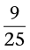 van R500
(b)
 van R500
van R500
(c)
van R500
2. 'n Klein koor
van 8 lede het die tweede prys in 'n kompetisie verower en
hulle het 2 vyfdes van die totale prysgeld
ontvang. Hulle het die geld gelykop tussen hulle verdeel. Die
totale prysgeld was R1 000. Hoeveel prysgeld het elke koorlid
gekry?
3. (a)
Hoeveel is  van 400?
van 400?
(b)
Hoeveel is  van jou antwoord vir
(a)?
van jou antwoord vir
(a)?
(c)
Hoeveel is  van 400?
van 400?
4. Hier is Nathi se
antwoord op vraag 2:
1 vyfde van R1 000
is R200, dus 2 vyfdes is R400. Die koor het dus altesaam R400
ontvang. Elke lid het 1 agtste van die R400 gekry, wat R400
\div 8 = R50 is.
(a) Vergelyk jou eie antwoorde met
Nathi se antwoorde. Werk hulle weer uit as
hulleverskil en vind uit wie se antwoord
reg is.
(b) Kyk of jy saamstem dat
 van R1 000 = R50.
van R1 000 = R50.
(c) Probeer om te verduidelik hoekom
die antwoord op vraag 2 dieselfde as van R1 000 is.
 van 2 vyfdes is moeilik om uit
te werk.
van 2 vyfdes is moeilik om uit
te werk.
5. Gebruik die
getalle 80, 180, 260, 360 en 2 400 in die volgende vrae. Doen
jou werk in die tabel hier onder.
(a) Hoeveel
is  van elk van die
getalle?
van elk van die
getalle?
(b) Hoeveel
is  van elkeen van jou antwoorde
van (a)?
van elkeen van jou antwoorde
van (a)?
(c) Hoeveel
is  van elk van die
getalle?
van elk van die
getalle?
|
Getal
|
80
|
180
|
260
|
360
|
2
400
|
|
 vandie
getal vandie
getal
|
80
\div 4 \times 3
=
20 \times 3
=
60
|
180
\div 4 \times 3
=
45 \times 3
=
135
|
260
\div 4 \times 3
=
65 \times 3
=
195
|
360
\div 4 \times 3
=
90 \times 3
=
270
|
2
400 \div 4 \times 3
=
600 \times 3
= 1
800
|
|
van
dieantwoord
|
60
\div 5 \times 2
=
12 \times 2
=
24
|
135
\div 5 \times 2
=
27 \times 2
=
54
|
195
\div 5 \times 2
=
39 \times 2
=
78
|
270
\div 5 \times 2
=
54 \times 2
=
108
|
1
800 \div 5 \times 2
=
360 \times 2
=
720
|
|
vandie getal
|
80
\div 20 \times 6
= 4
\times 6
=
24
|
180
\div 20 \times 6
= 9
\times 6
=
54
|
260
\div 20 \times 6
=
13 \times 6
=
78
|
360
\div 20 \times 6
=
18 \times 6
=
108
|
2
400 \div 20 \times 6
=
20 \times 6
=
720
|
6. Gebruik jou antwoorde
vir vraag 5 om die volgende vrae te beantwoord.
(a)
Hoeveel is  van
van  van R80?
van R80?
(b)
Hoeveel is  van
van van R180?
van R180?
(c)
Hoeveel is  van
van  van R260?
van R260?
(d)
Hoeveel is  van
van  van R360?
van R360?
(e)
Hoeveel is  van
van  van R2 400?
van R2 400?
7. Om
van van 'n getal te bereken,
het jy die volgende gedoen: getal \div 4 \times 3 \div 5 \times
2.
(a) Stel ondersoek in daarna of
die getal
\times 3 \times 2
\div 5 \div 4
dieselfde antwoord sal gee as die getal \div 4 \times 3 \div 5 \times 2,
vir die getalle in vraag 5 of vir enige ander getalle wat
jy mag kies.
(b) Ondersoek of die getal \times 6 \div 20 dieselfde antwoord sal
gee as die
getal \times 3
\times 2 \div 5 \div 4.
(c) Ondersoek of die getal \times 3 \div 10 dieselfde antwoord sal
gee as die
getal \times 6 \div 20.
Om met 'n
gemengde getal soos byvoorbeeld 2 te vermenigvuldig, is dit goed
om dietelgetal in dieselfde breukeenheid as
die breukdeel uit te druk, byvoorbeeld:
te vermenigvuldig, is dit goed
om dietelgetal in dieselfde breukeenheid as
die breukdeel uit te druk, byvoorbeeld:
2 heles is 16
agtstes, dus 2 is +
is +  = .
= .
8. Bereken elk van die
volgende.
(a)  \times
\times
(b)  \times
\times
(c) \times  (d)
(d)  \times
\times  \times
\times
(e) 2 \times
\times  (f) 2
(f) 2 \times3
\times3
(g) 2 \times 2
\times 2 (h) 8
(h) 8 \times 3
\times 3
(i)  \times (j)
\times (j)  \times
\times  +
+  \times
\times 
(k) \times (l)  \times
\times  -
-  \times
\times 
(m) \times (n) \times  +
+  \times
\times 
(o)  -
-  \times
\times  (p)
(p)  \times
\times 
VIERKANTE EN KUBUSSE EN
WORTELS VAN BREUKE
1.
Bereken.
(a)  \times
\times  (b)
(b)  \times \times
\times \times 
(c) (d)
(e) (f) 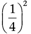
(g) (h)
(i) (j)
(k) (l)
2. Watter getal, met
homself vermenigvuldig, is  ?
?
Hierdie getal word die
vierkantswortel
van genoem. Dit kan as
geskryf word.
3. Bereken die
volgende. Hier en daar sal jou antwoorde van vraag 1 jou
help.
(a)
(b)
(c)

(d)
(e)
(f)
(g)
(h)

1.5 Deel deur 'n breuk
BEDIEN
SAP
Jannie gooi sap uit bottels in
glase.

Hy gebruik drie kwarte van 'n
bottel sap om een glas vol te maak.
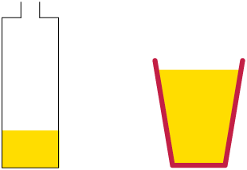
1. Hoeveel bottels sal
Jannie nodig hê om 10 glase vol te maak?
2. Hoeveel bottels sal
Jannie nodig hê om 30 glase vol te maak?
3. Hoeveel bottels sal
Jannie nodig hê om 100 glase vol te maak?
4. Hoeveel bottels sal hy
nodig hê om 180 glase vol te maak?
5. Hoeveel bottels sal hy
nodig hê om 37 glase vol te maak?
6. Hoeveel glase kan Jannie
volmaak met 20 bottels sap?
80 kwarte \div 3 = 26 vol glase en 2 kwarte bly oor (dit
is 2 derdes van 'n glas)

7. Hoeveel glase kan Jannie
volmaak met 36 vol bottels sap?
Op 'n
ander dag gebruik Jannie glase van 'n ander grootte. Hy het 5
agtstes van 'n bottel sap nodig om een van hierdie glase vol te
maak.
8. Hoeveel bottels sap het
Jannie nodig om 50 van hierdie glase vol te maak?
9. Hoeveel van hierdie
glase kan Jannie uit 25 vol bottels sap volmaak?
Jannie
gebruik weer ander glase. Vir hierdie glase het hy
van 'n vol bottel sap nodig om
een glas te vul.
10. Hoeveel bottels sap het
Jannie nodig om 44 van hierdie glase vol te maak?
11. Hoeveel van hierdie
glase kan Jannie volmaak uit 25 vol bottels sap?
'n glas volmaak van wat oorbly, dus kan hy 35 en 5
sewendes van 'n glas volmaak.
12. Hoeveel glase
kan Jannie uit 36 vol bottels volmaak as hy 'n driekwart bottel
nodig het om een glas te vul?
DOEN DIE SAP-BEREKENINGE
VINNIGER
1. Ria het R850 en
hoenders kos R67 elk. Watter bewerking het sy nodig om uit te
werk hoeveel hoenders sy kan koop?
2. Jannie het 16 bottels en
het 3 kwarte van 'n bottel nodig om een
glas vol te maak.
(a) Hoeveel kwarte is daar in 16 vol
bottels sap?
(b) Hoeveel glase kan hy met hierdie
kwarte volmaak?
By vraag
2 het jy uitgewerk hoeveel glase, wat elk
van 'n bottel bevat, uit 16
bottels
volgemaak kan word. Jy het dit
gedoen deur eers die totale hoeveelheid kwarte in 16 bottels
uit te werk, en dit dan deur 3 te deel om uit te vind hoeveel
glase volgemaak kan word. Doen vrae 3 en 4 op dieselfde
manier.
3. Jannie het 20
bottels sap en het 5 agtstes () van 'n bottel nodig om een
glas te vul. Om uit te vind hoeveel glase hy kan
volmaak, moet hy uitvind hoeveel 20 gedeel
deur is. Doen jou bewerkings
soos in vraag 2 om dit uit te vind.
4. Jannie het 25
bottels sap en het  van
‘n bottel nodig om een
glas vol te maak. Hoeveel glase kan hy volmaak?
van
‘n bottel nodig om een
glas vol te maak. Hoeveel glase kan hy volmaak?
In vrae 2, 3 en 4 het jy
in werklikheid hierdie berekeninge gedoen:
In vraag 2 het jy
16 \div uitgewerk, deur die berekening
16 \times 4 \div 3.
In vraag 3 het jy
20 \div uitgewerk, deur die berekening
20 \times 8 \div 5.
In
vraag 4 het jy 25 \div  uitgewerk, deur die berekening
25 \times 5 \div 3.
uitgewerk, deur die berekening
25 \times 5 \div 3.
Om deur 'n breuk te
deel, vermenigvuldig jy met die noemer en deel deur die
teller.
5.
Bereken:
(a) 9 \div (b) 12 \div
(c) 15 \div  (d) 2 \div
(d) 2 \div
(e) 20 \div (f) 120 \div 3
6.
Bereken:
(a) 9 \times  (b) 12 \times
(b) 12 \times
(c) 15 \times (d) 2 \times
(e) 20 \times (f) 120 \times
7. Wat merk jy op uit jou
antwoorde op vrae 5 en 6?
Om met 'n breuk te deel, draai
ons die breuk om en vermenigvuldig!
Byvoorbeeld, 15 \div
 = 15 \times .
= 15 \times .
is die resiprook (ook die
multiplikatiewe inverse genoem) van .
Deel is die inverse
van vermenigvuldiging.
Die metode van deel deur te
vermenigvuldig met die inverse werk ook as 'n breuk deur 'n
breuk gedeel word. Byvoorbeeld \div  kan bereken word deur
kan bereken word deur
 \times
\times  .
.
8.
Bereken:
(a) \div (b) \div
(c) \div (d) 2 \div
\div 
(e) 4 \div
\div  (f) 5 \div 2
(f) 5 \div 2
In hierdie hoofstuk gaan
jy met breuke werk wat in die desimale notasie geskryf
is. Wanneer breuke in die desimale notasie geskryf
is, kan ons berekeninge met hulle doen op dieselfde manier as
wat ons berekeninge met telgetalle doen. Dit is belangrik om
altyd in gedagte te hou dat die gewone breukvorm, die desimale
vorm en die persentasievorm bloot verskillende maniere is om
presies dieselfde getalle uit te druk.
2.1 Ekwivalente
vorme 31
2.2 Orden en vergelyk
desimale breuke 34
2.3 Rond desimale breuke
af 36
2.4 Berekeninge met
desimale breuke 37
2.5 Los probleme
op 40
2Breuke
in desimale notasie
2.1 Ekwivalente vorme
BREUKE IN
DESIMALE NOTASIE
1. Watter breuk van elke
reghoek is ingekleur? Skryf jou antwoorde in die tabel
neer.
(a) 
(b) 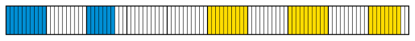
(c) 
(d) 
|
|
|
|
|
(a)
Rooi
|

|
0,36
|
|
(b)
Groen
|

|
0,17
|
|
Geel
|
|
0,28
|
|
(c)
Groen
|

|
0,17
|
|
Geel
|

|
0,28
|
|
(d)
Geel
|

|
0,34
|
|
Groen
|

|
0,38
|
2.
Kyk nou watter breuk van die reghoeke in vraag 1 nie
ingekleur is nie.
|
|
|
|
|
(a)
|

|
0,64
|
|
(b)
|

|
0,55
|
|
(c)
|

|
0,55
|
|
(d)
|

|
0,28
|
Desimale breuke en
gewone breuke is bloot verskillende maniere om dieselfde
getal uit te druk. Ons noem dit verskillende
notasies.
As jy 'n sakrekenaar het, kan
jy ook die teller deur die noemer deel om die desimale vorm van
die breuk te kry, byvoorbeeld:  = 9 \div 20 = 0,45
= 9 \div 20 = 0,45
Om 'n
desimale breuk as 'n
gewone breuk te skryf, kan 'n mens eers die
desimale breuk as 'n gewone breuk met 'n mag van 10 as noemer
skryf en dan vereenvoudig indien nodig.
3.
Skryf elkeen van die getalle in die desimale
vorm:


4. Skryf as desimale
breuke:
(a) 2 \times 10 + 1
\times 1 +  (b) 3 \times 1 + 6 \times
(b) 3 \times 1 + 6 \times

(c) Drie
honderdstes (d) 7 \times
5. Skryf die getalle as
breuke in hulle eenvoudigste vorm:
0,2 0,85 0,07 12,04 40,006
6. Skryf as desimale
breuke:
(a) 5 + 12 tiendes (b) 2 + 3
tiendes + 17 honderdstes
(c) 13 honderdstes + 15
duisendstes (d) 7 honderdstes + 154
honderdstes
HONDERDSTES, PERSENTASIES
EN DESIMALE
Dit is dikwels moeilik om
breuke met verskillende noemers te vergelyk. Breuke met
dieselfde noemer is makliker om te vergelyk. Om hierdie en
ander redes word breuke dikwels as honderdstes uitgedruk. 'n
Breuk wat as honderdstes uitgedruk is, word 'n
persentasie
genoem. In plaas van 6 honderdstes kan ons
sê 6 persent of  of 0,06.
of 0,06.
6 persent of of 0,06 is bloot drie
verskillende maniere om dieselfde getal te skryf.
Die simbool % dui
persentasie aan. In plaas daarvan om "17 persent" te skryf,
kan ons 17% skryf.
1. Druk elk van die
volgende op drie maniere uit: in desimale notasie, in
persentasienotasie en in die gewone breuknotasie.
(a) 80 honderdstes (b) 5
honderdstes
(c) 60 honderdstes (d) 35
honderdstes
2. Voltooi die
tabel:
|
|
|
|
|
|
0,3
|
30%
|
|
|
0,25
|
25%
|
|

|
0,15
|
15%
|
|
|
0,125
|
12,5%
|
|

|
0,55
|
55%
|
|

|
0,01
|
1%
|
2.2 Orden en vergelyk desimale breuke
GROTER,
KLEINER OF EWE GROOT?
1. Gee die waardes
van die gemerkte punte (A tot D) so akkuraat as moontlik in
die desimale
notasie. Skryf die waardes onder die letters A tot
D neer.
(a) 
(b)
(c) 
(d)
(e) 
(f) 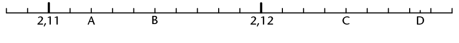
(g)
(h) 
(i)
2. Rangskik die getalle van
groot na klein. Verduidelik jou metode.
5 267 1 263 1 300 12 689 635 1 267 125 126
12
3. Rangskik die getalle van
groot na klein. Verduidelik jou metode.
0,8 0,05 0,901 0,15 0,465 0,55 0,75 0,4
0,62
0,901 0,8 0,75 0,62 0,55 0,465 0,4 0,15
0,05
4. Skryf drie
verskillende getalle neer wat groter is as die eerste getal en
kleiner is as die tweede getal.
(a) 5 en 5,1 (b) 5,1 en 5,11 (c)
5,11 en 5,12
(d) 5,111 en 5,116 (e) 0 en 0,001
(f) en 1
5. Onderstreep die grootste
van die twee getalle.
(a) 2,399 en 2,6 (b)
5,604 en 5,64 (c) 0,11 en 0,087
(d)  en 50%(e)
en 50%(e)  en
(f) 0,125 en 0,25
en
(f) 0,125 en 0,25
6.
Hierdie tabel vertoon inligting oor twee
wêreld-swaargewigbokskampioene. Wie van hulle verwag
jy sal die voordeel hê as hulle teen mekaar sou veg?
Hoekom?
|
|
|
|
Lengte (m)
|
1,98
|
1,88
|
|
Massa (kg)
|
112
|
103,3
|
|
Reikwydte (m)
|
2,03
|
1,91
|
7. Vul in <, >
of = .
(a) 3,09 <
3,9 (b) 3,9 = 3,90
(c) 2,31 < 3,30
(d) 3,197
< 3,2 (e) 4,876 < 5,987 (f)
123,321 > 123,3
8. Hoeveel getalle is daar
tussen 3,1 en 3,2?
'n Oneindige getal.
2.3 Rond desimale breuke af
Desimale breuke kan op
dieselfde manier as telgetalle afgerond word. Dit kan na die
naaste telgetal of na een, twee, drie ens. getalle na die komma
afgerond word.
As die laaste syfer 'n 5 of groter is, word dit
na die volgende getal opgerond. Byvoorbeeld: 13,5 afgerond tot
die naaste telgetal is 14; 13,526 afgerond tot twee syfers na
die komma is 13,53.
'n Getal waarvan die laaste syfer 'n 4 of
minder is, word afgerond na die vorige getal. Byvoorbeeld: 13,4
afgerond tot die naaste telgetal is 13.
ROND AF OF OP
1. Rond die getalle af of
op tot die naaste telgetal:
29,34 3,65 14,452 3,299 39,1 564,85
1,768
2. Rond die getalle af tot
een desimale plek:
19,47 421,34 489,99 24,37 6,77
3. Rond die getalle af tot
twee desimale plekke:
8,345 6,632 5,555 34,239 21,899
4. Mnr. Peters koop
'n radio vir R206,50. Die winkel laat hom toe om dit oor ses
maande af te betaal. Hoe moet hy die geld
terugbetaal?
5. Mev. Smit koop
'n karton met 10 kg druiwe by die mark vir R24,77. Sy moet die
druiwe tussen haarself en twee vriendinne verdeel.
(a) Hoeveel druiwe kry elke
vrou?
(b) Hoeveel moet elke vriendin mev.
Smit betaal vir die druiwe?
6. Skat die antwoorde vir
die volgende deur die getalle af te rond.
(a) 1,43 \times 1,62
(b) 3,89 \times 4,21
2.4 Berekeninge met desimale breuke
Wanneer 'n mens desimale breuke
optel en aftrek, word
- •
tiendes by tiendes getel,
- •
tiendes van tiendes afgetrek,
- •
honderdstes by honderdstes getel,
- •
honderdstes van honderdstes afgetrek ens.
KOM ONS
BEREKEN!
1. Vier opeenvolgende
skofte van 'n fietswedren
is 21,4 km; 14,7 km; 31 km en
18,6 km lank.
Hoe lank is die hele
wedren?
Antwoord:
2. Bereken:
(a) 16,52 + 2,35 (b) 16,52 + 9,38
(c) 16,52 + 9,78
(d) 30,08 + 2,9 (e) 0,042 + 0,103
(f) 9,99 + 0,99
3. Bereken:
(a) 45,67 - 23,25 (b) 45,67 -
23,80 (c) 187,6 - 98,45
(d) 1,009 - 0,998 (e) 0,9 - 0,045
(f) 65,7 - 37,6
4. Die volgende stel
metings (in cm) is gedurende 'n eksperiment
aangeteken:
56,8; 55,4; 78,9; 57,8; 34,2; 67,6; 45,5;
34,5; 64,5; 88
|
(a)
|
Bereken die som van
die metings en rond dit af tot die naaste
telgetal.
|
(b)
|
Rond eers elke
meting tot die naaste telgetal af en bereken dan die
som.
|
(c) Watter van jou antwoorde vir 4(a)
en (b) is die naaste aan die waarheid? Verduidelik
hoekom jy so sê.
5.
Hoeveel is 0,7 groter as 0,07?
6.
Die verskil tussen twee getalle is 0,75.
Die
grootste getal is 18,4.
Wat is die ander
getal?
Om breuke, wat as desimale
geskryf is, te vermenigvuldig, werk die
breuke om na telgetalle deur met magte van 10 te vermenigvuldig
(bv. 0,3 \times 10 = 3), doen die berekening met die telgetalle
en verwerk dan weer terug na desimale breuke.
Byvoorbeeld: 13,1 \times 1,01
13,1 \times
10 \times 1,01 \times 100 = 131 \times 101 = 13
231; 13 231 \div 10 \div
100 = 13,231
Wanneer desimale getalle
gedeel word,
kan jy die deeltal en die deler eers met dieselfde getal
vermenigvuldig om die werk makliker te maak.
Byvoorbeeld: 21,7 \div 0,7 = (21,7
\times 10) \div (0,7
\times 10) = 217
\div 7 = 31
7. Bereken die volgende. Jy
mag breuknotasie gebruik om jou te help.
(a) 0,12 \times 0,3 (b) 0,12
\times 0,03 (c) 1,2 \times 0,3
(d) 350 \times 0,043 (e) 0,035
\times 0,043 (f) 0,13 \times 0,16
(g) 1,3 \times 1,6 (h) 0,13 \times
1,6
8. 30,5 \times 1,3 = 39,65.
Gebruik hierdie antwoord om elk van die volgende uit te
werk.
(a) 3,05 \times 1,3 (b) 305 \times
1,3 (c) 0,305 \times 0,13
(d) 305 \times 13 (e) 39,65 \div
30,5 (f) 39,65 \div 0,305
(g) 39,65 \div 0,13 (h) 3,965 \div
130
9. 3,5 \times 4,3 = 15,05.
Gebruik hierdie antwoord om elk van die volgende uit te
werk.
(a) 3,5 \times 43 (b) 0,35 \times
43 (c) 3,5 \times 0,043
(d) 0,35 \times 0,43 (e) 15,05
\div 0,35 (f) 15,05 \div 0,043
10. Bereken die volgende.
Jy mag na telgetalle omskakel om dit makliker te
maak.
(a) 62,5 \div 2,5 (b) 6,25 \div 2,5
(c) 6,25 \div 0,25 (d) 0,625 \div 2,5
2.5 Los probleme op
|
1.
|
(a)
|
Verdeel R44,45
tussen sewe mense sodat elkeen dieselfde bedrag
ontvang.
|
(b)
|
Johan spaar elke
week R15,25. Hy het nou R106,75. Hoeveel weke lank het
hy gespaar?
|
|
2.
|
(a)
|
Bereken 14,5 \div
6, korrek tot twee desimale
plekke.
|
(b)
|
Bereken 7,41 \div
5, korrek tot een desimale
plek.
|
3. Bepaal die waarde
van x.
Gee jou antwoorde afgerond tot twee desimale plekke.
(a) 7,1 \div x = 4,2 (b) x \div 0,7 = 6,2 (c) 12 \div
x = 6,4
(d) x \div 3,5 = 7 (e) 2,3 \times
x = 6 (f) 0,023
\times x = 8
|
4.
|
(a)
|
Die massa van 1
â„“water is
ongeveer 0,995 kg. Wat is die massa van
50â„“ water?
Wat is die massa van 0,5 â„“
water?
|
(b)
|
Maalvleis kos
R36,65 per kilogram. Wat kos 3,125 kg maalvleis? Wat
sal 0,782 kg kos?
|
Reghoekige driehoeke het
'n eienskap wat nie op ander soorte driehoeke van
toepassing is nie. In hierdie hoofstuk gaan jy die
eienskap, wat bekend staan as die stelling van Pythagoras,
ondersoek. 'n Stelling is 'n bewering wat deur beredenering as
waar bewys is. As jy eers hierdie stelling verstaan, gaan jy
oefen om dit op verskeie maniere toe te pas.
3.1 Die lengtes van die
sye van reghoekige driehoeke 43
3.2 Werk met die
stelling van Pythagoras 46
3.3 Bepaal ontbrekende
sylengtes in reghoekige driehoeke 48
3.4 Is die driehoeke
reghoekig of nie? 51
3Die
stelling van Pythagoras
3.1 Die lengtes van die sye van reghoekige
driehoeke
WAT ONTHOU
JY van DRIEHOEKE?
As die hoekpunte van 'n
driehoek A, B en C gemerk is, word die teenoorstaande sye
dikwels as a,
b en c gemerk, soos getoon in die
diagramme hier bo.
Ons gebruik die woord skuinssy vir die sy
teenoor die 90° hoek van 'n reghoekige driehoek. Die
skuinssy is altyd die langste sy van 'n reghoekige
driehoek. 'n Driehoek sonder 'n regte hoek het nie 'n skuinssy
nie.
ONDERSOEK DIE VERBAND
TUSSEN DIE LENGTES VAN DIE SYE
1.
Bestudeer die vier figure hier onder. Elke driehoek in
die vier figure het 'n vierkant op elkeen van sy sye. Dus, in
figuur (a) is a = 3 eenhede,
b = 4 eenhede
en c =
5 eenhede lank.
(a) (b)
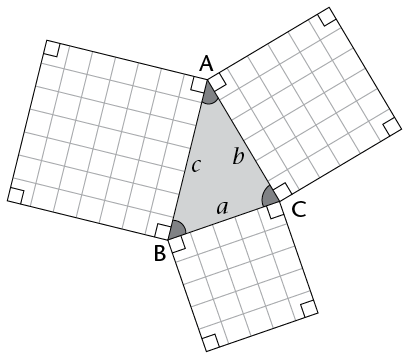
(c)
(d)
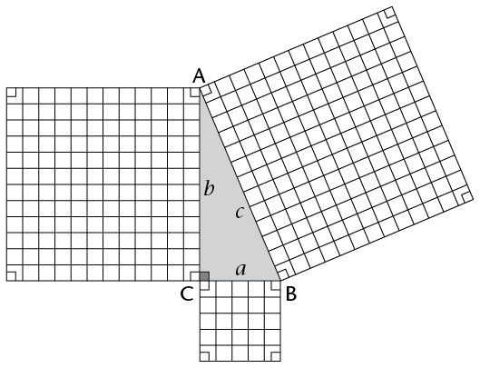
2. Verwys na die
vier figure in vraag 1 om die onderstaande tabel te
voltooi.
|
|
|
|
|
|
|
|
|
|
(a)
|
Reghoekig
|
3
|
4
|
5
|
9
|
16
|
25
|
|
(b)
|
Skerphoekig
|
5
|
6
|
7
|
25
|
36
|
49
|
|
(c)
|
Reghoekig
|
5
|
12
|
13
|
25
|
144
|
169
|
|
(d)
|
Stomphoekig
|
6
|
5
|
9
|
36
|
25
|
81
|
3. Kyk na die voltooide
tabel en voeg = , > of < in by die volgende
stellings:
a2 + b2
c2 as \triangle}ABC 'n
skerphoekige driehoek is.
a2 + b2
c2 as \triangle}ABC 'n
stomphoekige driehoek is.
a2 + b2
c2 as \triangle}ABC 'n
reghoekige driehoek is.
4. Watter van die bewerings
hier onder is korrek?
A. In enige reghoekige driehoek, is
die oppervlakte van die vierkant op die skuinssy
gelyk aan die som van die oppervlaktes van die vierkante
op die ander twee sye.
B. As 'n driehoek skerphoekig is, is
die kwadraat van die lengte van die langste sy
gelyk aan die som van die kwadrate van die
lengtes van die ander twee sye.
C. As 'n driehoek reghoekig is, is die
kwadraat van die lengte van die skuinssy gelyk aan
die som van die kwadrate van die lengtes van die ander twee
sye.
D. In enige stomphoekige driehoek, is
die oppervlakte van die vierkant op die langste sy
gelyk aan die som van die oppervlaktes van die vierkante op die
ander twee sye.
5. Die volgende
tabel gee die sylengtes a, b en c van 10 driehoeke. Voltooi die
tabel om te bepaal watter soort driehoeke elkeen is
(skerphoekig, stomphoekig of reghoekig).
|
|
|
|
|
|
|
|
|
7
|
8
|
10
|
72 +
82 =
113
|
102 =
100
|
a2
+ b2 > c2
|
Skerphoekig
|
|
4
|
5
|
8
|
42 +
52 = 41
|
82 = 64
|
a2
+ b2 < c2
|
Stomphoekig
|
|
6
|
8
|
10
|
62 +
82 =
100
|
|
a2
+ b2 = c2
|
Reghoekig
|
|
8
|
13
|
17
|
|
|
a2 + b2 <
c2
|
Stomphoekig
|
|
3
|
4
|
5
|
25
|
25
|
a2 + b2
=c2
|
Reghoekig
|
|
5
|
6
|
7
|
61
|
49
|
a2 + b2 >
c2
|
Skerphoekig
|
|
5
|
12
|
13
|
169
|
169
|
a2 + b2 =
c2
|
Reghoekig
|
|
15
|
8
|
17
|
289
|
289
|
a2 + b2 =
c2
|
Reghoekig
|
|
11
|
60
|
61
|
3 721
|
3 721
|
a2 + b2 =
c2
|
Reghoekig
|
|
12
|
35
|
37
|
1 369
|
1 369
|
a2 + b2 =
c2
|
Reghoekig
|
6. Twee stukke
hout, een rooi en een blou, is lossies aan die een kant
vasgemaak.
Die twee los kante is met 'n veer verbind.
Die hoek tussen die twee
houtstawe
kan verander word.
Beskryf hoe hierdie hoek die lengte
van die veer beïnvloed.
3.2 Werk met die stelling van Pythagoras
Die spesiale verband tussen die
lengtes van die sye
'n Nota oor Pythagoras
Pythagoras het in ongeveer
500 vC geleef. Die
stelling is na Pythagoras vernoem, omdat hy waarskynlik die
eerste persoon was wat die stelling bewys het. Die
stelling was egter bekend en gebruik in ander dele van
die wêreld, soos in Egipte, 1 200
jaar voor Pythagoras se geboorte.
van 'n reghoekige driehoek
staan bekend as die stelling van Pythagoras.
Dit kan in terme vanoppervlakte as volg gestel
word:
As 'n driehoek 'n
regte hoek bevat, is die oppervlakte van die vierkant,
waarvan die sy die skuinssy van die driehoek is, gelyk aan
die som van die oppervlaktes van die vierkante op die ander
twee sye.
Die verwysing na oppervlakte
kan weggelaat word.
As 'n driehoek 'n
reghoekige driehoek is, dan is die kwadraat van die lengte
van die skuinssy gelyk aan die som van die kwadrate van die
lengtes van die ander twee sye.
Ons kan die verband tussen die
lengtes van die sye
van 'n driehoek deur middel van
die vergelyking c2 = a2 + b2 uitdruk, waar
c die lengte
van die skuinssy verteenwoordig ena en b die lengtes van die
ander twee sye.
WERK MET DIE
FORMULe
1. Skryf 'n
"Pythagoras-vergelyking" vir elk van die volgende driehoeke.
Verduidelik wat elke lettersimbool verteenwoordig.

y, q en
e
verteenwoordig die lengtes van die skuinssye en
x, z, r, p, d
en f
2.
Bestudeer die voorbeeld hier onder.
|
Voorbeeld
Beskou die driehoek
hier onder. Sy a is 3 eenhede
lank en sy b is 4 eenhede
lank. Wat is die lengte van sy
c?
|
|
|
Indien sy
a 3
eenhede lank is en
sy
b is 4
eenhede lank, dan sal volgens Pythagoras se
stelling:
c2 = a2 + b2
c2 = 32 + 42
c2 = 9 + 16
c2 = 25
 = =
c = 5 eenhede
|
3.
Die oppervlaktes van sommige van die vierkante hier onder
word gegee. Bereken die ontbrekende oppervlaktes van die
vierkante, sowel as die lengtes van al die sye.
|
(a)
|
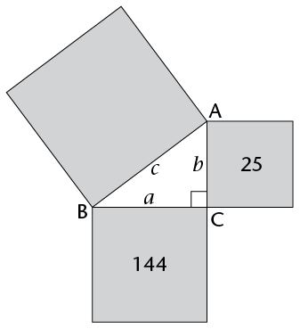
|
c
= 
∴
c = 13
eenhede
|
|
(b)
|

|
c
676 = 576 + b
676 - 576 = b
100 = b
|
4. Die tabel hier
onder verskaf inligting omtrent die sye van vyf
reghoekige driehoeke. Die lettersimbool cverteenwoordig die lengte
van die skuinssy in al die gevalle. Gebruik
Pythagoras se stelling om die tabel te voltooi en
laat die antwoorde in wortelvorm indien nodig.
|
|
|
|
|
|
|
|
|
7
|
24
|
25
|
49
|
576
|
625
|
625
|
|
16
|
30
|
34
|
256
|
900
|
1 156
|
1 156
|
|
10
|
24
|
26
|
100
|
576
|
676
|
676
|
|
4
|
7
|

|
16
|
49
|
65
|
65
|
|
1
|
1
|
|
1
|
1
|
2
|
2
|

3.3 Bepaal ontbrekende sylengtes in
reghoekige
driehoeke
Ons kan die stelling van
Pythagoras gebruik om die lengte van die derde sy van 'n
reghoekige driehoek te bereken as ons die lengtes van die
twee ander sye ken.
|
Voorbeeld 1
In 'n reghoekige
driehoek is sy a = 6 eenhede en
sy b
= 8 eenhede. Bereken
die lengte van die skuinssy c.
c2 = a2 + b2
= 62 + 82
= 36 + 64
= 100
=
c = 10
∴
c = 10
eenhede
|
|
Voorbeeld 2
In 'n reghoekige
driehoek is sy a =
5 eenhede en sy b =
3 eenhede.
Bereken die lengte van die skuinssy
c.
c2 = a2 + b2
= 52 + 32
= 25 + 9
= 34
 = =
c =  (laat in wortelvorm) (laat in wortelvorm)
c =  eenhede eenhede
|
BEREKEN DIE LENGTE VAN DIE
SKUINSSY
Gebruik die formule vir die stelling van Pythagoras om
die lengte van die skuinssy te bereken. Laat jou antwoorde in
wortelvorm indien nodig.
|
1.
|
AC2 = AB2 + BC2
|
|
2.
|
|
|
3.
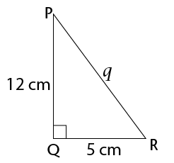
|
q2 = p2 + r2
|
|
4.
|
f2 = (4 cm)2 + (10 cm)2
|
|
5. 'n
Reghoekige driehoek met reghoeksye met die
volgende lengtes:
a = 9 cm, b = 40 cm.
|
c2 = a2 + b2
|
BEREKEN DIE ONTBREKENDE
SYLENGTE IN 'N REGHOEKIGE DRIEHOEK
Bereken die ontbrekende
sylengtes van die volgende driehoeke. Moenie 'n sakrekenaar
gebruik nie en laat die antwoorde in die eenvoudigste
wortelvorm waar nodig.
|
1.
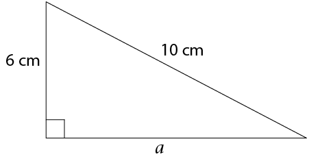
|
a =
8 cm
|
|
2.
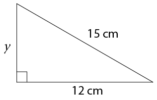
|
225 cm2 - 144 cm2 = y2
y =
9 cm
|
|
3.
|
169 m2 - 25 m2 = p2
p =
12
|
|
4.
|
|
|
5.
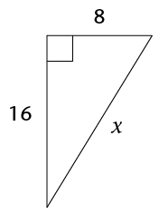
|
x2 = (8)2 + (16)2
x2 = 642 + 2562
x2 = 3202
= 
x =

x =

|

3.4 Is die driehoeke reghoekig of nie?
Jy het in afdeling 3.1 en 3.2
geleer dat in 'n reghoekige driehoek, die oppervlakte van die
vierkant op die skuinssy gelyk is aan die som van die
oppervlaktes van die vierkante op die ander twee
sye.
Hoe weet ons of 'n driehoek 'n reghoekige
driehoek is as die lengtes van die sye gegee word? Een manier
is om die "omgekeerde" van die stelling van Pythagoras te
gebruik.
Die omgekeerde stel
dit dat as die som van die kwadrate van twee sye gelyk is aan
die kwadraat van die langste sy, dan is die
driehoek reghoekig.
'n Omgekeerde is 'n
stelling wat dÃt wat in 'n stelling
gegee is, omruil met dit wat bewys moet word.
Ons kan die omgekeerde ook as
volg stel:
As 'n driehoek met
sylengtes a, b en c sodanig is
datc2 = a2 + b2, dan is die driehoek
reghoekig.
In die vrae wat volg, moet jy
bepaal of die driehoeke reghoekig is of nie. Bestudeer eers die
voorbeeld.
|
Voorbeeld: Bepaal
of die driehoek reghoekig is of nie.
(Langste sy se
lengte)2 = (15)2 = 225
Som van die kwadrate van die
twee ander sye se lengtes
= 92 + 122
= 81 + 144
= 225
(Langste
sy)2
= Som van die kwadrate van die ander twee
sylengtes
En dit kan geskryf word
as 152 = 92 + 122
∴
Die driehoek is reghoekig.
|
REGHOEKIG OF NIE?
Bepaal of die driehoeke
reghoekig is of nie.
|
1.
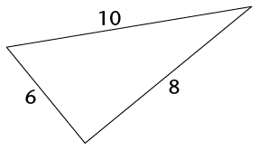
|
En dit kan geskryf word
as 102 = 82 + 62
∴Die
driehoek is 'n reghoekige driehoek
|
|
2.
|
En dit kan geskryf word
as 132 = 122 + 52
∴Die
driehoek is 'n reghoekige driehoek.
|
|
3. 'n
Driehoek het sye met lengtes 6, 9 en 15
eenhede.
|
En dit kan geskryf word
as 152 â‰
92 +
62
∴
Die driehoek is nie 'n reghoekige driehoek
nie.
|
4. Watter van die
volgende sylengtes van 'n driehoek sal 'n reghoekige driehoek
vorm? Antwoord sonder om enige berekeninge te doen en
verduidelik jou antwoord.
(a) 4, 2, 2 (b) 6, 8, 10 (c) 9,
12, 15
(d) 3, 4, 6 (e) 3x, 4x, 5x (f) 30, 40, 50
sylengtes 3, 4 en 5 eenhede lank.
In graad 7 het jy geleer
om formules te gebruik om die omtrek (d.w.s. die afstand rondom
'n figuur of voorwerp) van vierkante en reghoeke te bereken. Jy
het ook formules gebruik om die oppervlakte
(d.w.s. die grootte van 'n plat vlak) van vierkante, reghoeke
en driehoekete bereken. In hierdie hoofstuk gaan
jy daardie formules wat jy geleer het, hersien. Jy gaan ook
formules ondersoek en gebruik om die oppervlakte en omtrek van
sirkels te bereken. Hierdie hoofstuk behandel ook die
herleiding tussen lengte- en oppervlakte-eenhede. Laasgenoemde
sluit in vierkante millimeter (mm2), vierkante sentimeter
(cm2),
vierkante meter (m2) en vierkante kilometer
(km2).
4.1 Omtrek van vierkante
en reghoeke 55
4.2 Oppervlakte van
veelhoeke 57
4.3 Omtrek van
sirkels 61
4.4 Oppervlakte van
sirkels 65
4.5 Herleiding tussen
vierkante eenhede 70

4Oppervlakte
en omtrek van
2D-figure
4.1 Omtrek van vierkante en reghoeke
Die omtrek van 'n vlak figuur
(2D-figuur) is die afstand rondom die figuur. Ons meet dit in
eenhede soos millimeter (mm), sentimeter (cm), meter (m) en
kilometer (km).
WAAR DIE FORMULES VIR
OMTREK VANDAAN KOM
1. Die afmetings
van een blokkie in die rooster hier onder is 1 cm \times 1 cm.
Bereken die omtrek van elke figuur deur die lengtes en breedtes
bymekaar te tel.

|
|
|
|
|
|
|
|
|
Lengte
|
1 cm
|
2 cm
|
3 cm
|
2 cm
|
1 cm
|
3 cm
|
|
Breedte
|
1 cm
|
2 cm
|
3 cm
|
1 cm
|
3 cm
|
2 cm
|
|
Omtrek
|
4 cm
|
8 cm
|
12 cm
|
6 cm
|
8 cm
|
10 cm
|
2. Verduidelik aan
'n maat hoekom die volgende formules vir omtrek reg
is:
Omtrek van 'n
vierkant = 4s of (4 \times lengte van 'n sy)
Omtrek van 'n
reghoek = 2(l
+ b) of
2l + 2b (waar
l die lengte
en b
die breedte is)
3. Gebruik die formules in
vraag 2 om die omtrek van figure A tot F te bereken.
BEREKEN OMTREK MET BEHULP
VAN FORMULES
Gebruik formules om
die omtrek van die volgende figure te bereken:
1.
2. 
3. 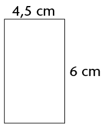 4.
5.
6.
4.2 Oppervlakte van veelhoeke
Oppervlakte of area
(A), dit wil
sê die grootte van die plat vlak van 'n figuur, word
in vierkante eenhede soos mm2, cm2, m2 en
km2
gemeet.
OPPERVLAKTE VAN VIERKANTE
EN REGHOEKE
1. Hoeveel
vierkantige blokkies is nodig om die oppervlakte van die figure
hier onder toe te pak? Skryf die antwoorde onder of langs die
figure.
2. Elke vierkant in
die rooster hier bo se afmetings is 1 cm \times 1 cm (of 1
cm2).
Skryf die oppervlakte van elke figuur in vierkante sentimeter
(cm2)
neer.
Formules vir die berekening van
oppervlakte word hier onder gegee:
Oppervlakte van 'n
reghoek = l
\times b
3. Gebruik die formules om
die oppervlakte van figure C, E en F in vraag 1 uit te
werk.
Oppervlakte van figuur C: s2 = (3 cm)2 = 3 cm \times 3 cm = 9
cm2
Oppervlakte van figuur E: l \times b = 1 cm \times 3 cm = 3
cm2
Oppervlakte van figuur F:
l \times
b = 3 cm \times 2 cm
= 6 cm2
LOS
NOG OMTREK- EN OPPERVLAKTE-PROBLEME OP
|
1. Die
omtrek van 'n vierkant is 8 cm. Wat is die
lengte van elke sy?
Omtrek = 4s
∴
Lengte van elke sy = 2 cm
|
2. Die
oppervlakte van 'n reghoek is
40cm2en die lengte is
8 cm. Wat is die breedte?
Oppervlakte = l \times b
∴
Breedte van reghoek = 5 cm
|
|
3. Die
omtrek van 'n vierkant is 32 cm. Wat is sy
lengte en oppervlakte?
Omtrek = 4s
∴
Lengte = 8 cm; oppervlakte = 64 cm2
|
4. Die
oppervlakte van 'n reghoek is
60
cm2
en die lengte is 12 cm. Wat is die breedte en die
omtrek?
Oppervlakte = l \times b
Omtrek = 2(l + b)
|
|
5. 'n
Reghoekige erf het 'n oppervlakte van 6 000
m2. Die erf is 20
m breed. Wat is die erf se lengte en omtrek.
l =
6 000 m2
\div 20 m
Omtrek = 2(l + b)
∴
Lengte = 30 m; omtrek = 100 m
|
6. 'n
Vierkant het 'n oppervlakte van
10 000
m2. Wat is die
omtrek?
Oppervlakte = s2
Omtrek = 4s
∴
Omtrek = 400 m
|
OPPERVLAKTE VAN
DRIEHOEKE
Jy het
verlede jaar reeds die oppervlakte van driehoeke met hierdie
formule bereken:
Oppervlakte van
driehoek =  (basis \times loodregte hoogte) =
(basis \times loodregte hoogte) =
 (b \times h)
(b \times h)
Enige van die drie sye kan as
die basis
beskou word. Die
kortste afstand tussen die
hoekpunt teenoor die gekose basis en die basis
word die hoogte van die driehoek
met betrekking tot die gekose basis genoem. As 'n
driehoek stomphoekig is, is die lyn wat die hoogte
wys buite die driehoek. In \triangle}JKL hier regs
is JM die loodregte hoogte op die basis KL.
Om die oppervlakte van 'n driehoek met
bostaande formule te bereken, moet die hoogte met betrekking
tot die gekose basis gebruik word.
BEREKEN DIE OPPERVLAKTE
VAN DRIEHOEKE
1. Skryf die naam
van elke basis met sy ooreenstemmende hoogte in \triangle}ABC
en \triangle}DEF in die tabel:
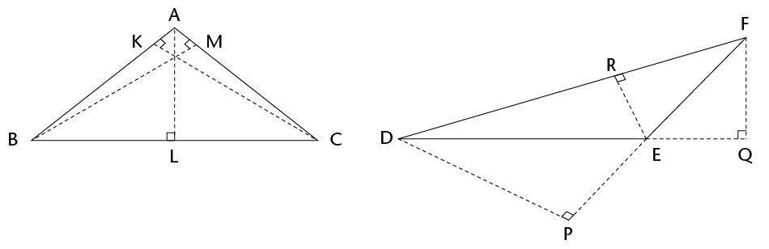
|
Basis
|
AB
|
AC
|
BC
|
DE
|
EF
|
DF
|
|
Hoogte
|
CK
|
BM
|
AL
|
FQ
|
DP
|
ER
|
2. Bereken die oppervlakte
van die volgende driehoeke:
(a)
(b)
(c)
OPPERVLAKTE VAN
SAAMGESTELDE FIGURE
'n
Saamgestelde figuur
word gevorm deur ander figure. Ons kan so 'n figuur
dikwels weer opbreek in reghoeke, vierkante en driehoeke sodat
ons sy oppervlakte kan bereken.
1. Gebruik 'n
liniaal en 'n potlood om elkeen van die volgende figure in
reghoeke, vierkante en/of driehoeke te verdeel. Die eerste
figuur is reeds vir jou gedoen.
2. Werk die lengte
van die sye wat jy gaan gebruik uit en bereken dan die
oppervlakte van die figure. Waar nodig, rond jou antwoorde tot
twee desimale plekke af.
(a)
(b)
(c)  (d)
(d) 
a = b
= 20 cm [Kongruente
driehoeke, RHS]
h2 = (20 cm)2 - (5 cm)2 = 375 cm2
Oppv van driehoek =  (5 cm \times 19,36 cm)
(5 cm \times 19,36 cm)
Oppv van figuur = 2
\times 48,4 cm2 + 290,4
cm2
4.3 Omtrek van sirkels
DELE VAN 'N
SIRKEL
In graad 7 het jy van die
verskillende dele van 'n sirkel geleer, insluitende die
volgende:
Die
middelpunt
van 'n sirkel is die punt in die middel van die
sirkel.
1. Gebruik 'n
liniaal om die radiuslengtes van die sirkels hier onder te
meet. Skryf dan die lengtes van beide die radius en die
middellyn van elke sirkel in die tabel neer.
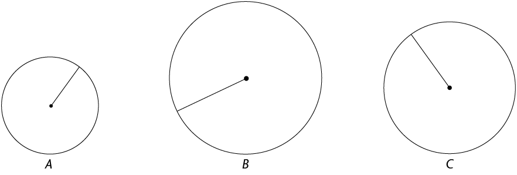
2. Skryf die middellyne van
sirkels met die volgende radiusse neer:
(a) r = 8 cm (b) r = 1 m (c) r = 4,5 cm (d) r = 6,2 m
VERBAND TUSSEN DIE OMTREK
EN DIE MIDDELLYN VAN 'N SIRKEL
As jy nie weet waar die
middelpunt van 'n sirkel is nie, kan jy
dit bepaal deur die middellyn
as volg te meet:
- • Merk
'n punt op die sirkel vanwaar jy gaan meet.
- • Hou
die ‘0' van jou liniaal op die merkplek en
beweeg die ander kant van die liniaal totdat jy
die langste afstand kry. Dit is die
middellyn.
Jy kan rofweg die afmeting van
die omtrek van die sirkel so kry:
- •
Gebruik 'n toutjie en lê dit so na as
moontlik om die rand van die sirkel.
- • Merk
die toutjie as jy weer by die beginpunt uitkom.
- • Meet
nou die lengte van die gemerkte toutjie op 'n
liniaal.
Hier onder is sirkels van
verskillende groottes. Hulle omtrekke, afgerond tot twee
desimale plekke, is in die tabel in vraag 2 op die volgende
bladsy gegee.
1. Meet die middellyn van
elke sirkel en skryf dit in die tabel.
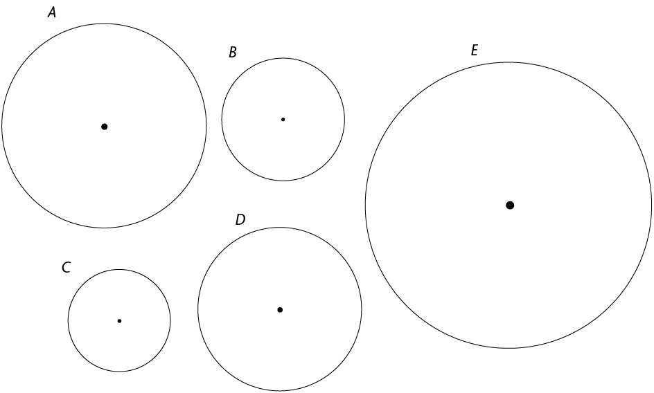
2. Gebruik 'n
sakrekenaar om die antwoorde in die laaste kolom uit te werk.
(Rond af tot twee desimale plekke.)
|
|
|
|
|
|
A
|
5
|
15,71
cm
|
3,14
|
|
B
|
3
|
9,42
cm
|
3,14
|
|
C
|
2,5
|
7,85
cm
|
3,14
|
|
D
|
4
|
12,57
cm
|
3,14
|
|
E
|
7
|
21,99
cm
|
3,14
|
3. Wat merk jy
op?
pi (Ï€) EN DIE
FORMULE VIR DIE OMTREK VAN 'N SIRKEL
In die vorige aktiwiteit het jy
agtergekom dat die omtrek van 'n sirkel gedeel deur die
middellyn altyd dieselfde antwoord gee. Hierdie antwoord se
konstante waarde word pi genoem.
Pi is 'n
Griekse letter en die simbool daarvoor is
Ï€.
Jy het ook met waardes gewerk wat jy tot
twee desimale plekke (honderdstes) afgerond het. In werklikheid
is π 'n irrasionale
getal. Dit beteken dat die syfers na die desimale komma
oneindig aangaan, sonder herhaling. Op 'n sakrekenaar sal jy
vind dat die waarde vir π aangedui word as
3,141592654 (afgerond tot 9 desimale plekke).
As ons
Ï€ in ons berekeninge gebruik,
rond ons dit gewoonlik af as
π ≈
of 3,14.
In die vorige aktiwiteit het jy
gesien dat, vir enige sirkel, =Ï€
(die omtrek gedeel deur die middellyn is gelyk aan die
konstante, π).
Daarom, as ons 'n sirkel se middellyn met π
vermenigvuldig, behoort ons die sirkel se omtrek te
kry:
Omtrek van 'n
sirkel (C)
= πd
=
Ï€(2r)
=
2Ï€r
GEBRUIK DIE FORMULE VIR
DIE OMTREK VAN 'N SIRKEL
Gebruik π
= 3,14 in die volgende berekeninge en rond die antwoorde
af tot twee desimale plekke waar nodig.
1. Bereken die omtrek van
'n sirkel met:
(a) 'n radius van 2 cm
(b) 'n radius van 10 mm
(c) 'n middellyn van 8
cm (d) 'n middellyn van 25 mm
(e) 'n radius/straal
van 40 m (f) 'n middellyn van 100 m
2. Bereken die radius en
die omtrek van 'n sirkel met 'n middellyn van:
(a) 125 mm (b) 70 cm
3. Bereken die radius van
'n sirkel met 'n omtrek van:
(a) 110 cm (b) 200 m
4.4 Oppervlakte van sirkels
ONDERSOEK
DIE FORMULE VIR DIE OPPERVLAKTE VAN 'N SIRKEL
1. Die grootte van elke
vierkant op die rooster hier onder is 1 cm \times 1 cm
(1 cm2).
 (a) Tel die vierkante binne
die sirkel. Skat wat die totaal van die dele van
vierkante (nie volle vierkante nie) sal wees. Wat
is die oppervlakte binne die sirkel?
(a) Tel die vierkante binne
die sirkel. Skat wat die totaal van die dele van
vierkante (nie volle vierkante nie) sal wees. Wat
is die oppervlakte binne die sirkel?
(b) Wat is die straal/radius
(r) van
die sirkel?
(c) Hoe akkuraat dink jy is hierdie
manier om die oppervlakte van die sirkel te
bepaal?
nadink.
(d) Hoe kan hierdie metode om die
oppervlakte van 'n sirkel by benadering te bepaal
verbeter word?
(e) Gestel ons gebruik 0,5 cm by 0,5
cm vierkante in plaas van 1 cm by 1 cm vierkante
om die oppervlakte van die sirkel te meet. Watter een van die
twee mates sal meer akkuraat wees vir die
oppervlakte? Verduidelik.
vierkante in die sirkel inpas.
(f) Gestel nou ons gebruik vierkante
wat 0,25 cm by 0,25 cm is. Watter een van die drie
mates sal die beste skatting wees?
Ons kan oppervlakte
skat deur 'n vierkantrooster op die oppervlak
waarvan ons die oppervlakte wil skat, te plaas.
Ons kan dan tel ongeveer hoeveel vierkante nodig is om die
oppervlak wat ons wil meet, te bedek.
In die aktiwiteite wat
volg gaan ons 'n formule ontwikkel om die
oppervlakte van 'n sirkel te bereken.
Beskou die sirkel langsaan. Dit
is in 16 identiese sektore verdeel. Ons gaan 'n
tegniek gebruik wat wiskundiges soms gebruik om
een figuur te omskep in 'n ander figuur waarvan
hulle iets weet om sodoende 'n probleem op te
los.
Die uitdaging hier is dat ons die
oppervlakte van 'n sirkel wil bereken. Ons weet
hoe om die oppervlakte van 'n reghoek te bepaal.
Kan ons 'n sirkel herteken sodat dit soos 'n
reghoek lyk? Een manier om dit te doen, is om die
sirkel in 16 identiese sektore op te deel. Ons sny
dan die sirkel op in 16 verskillende stukke soos hier onder
gewys.

Dan herrangskik ons die sektore
só.
2. Ons het nou die
sirkel omskep deur dit op te sny in identiese sektore en hulle
te herrangskik. Soos watter figuur lyk dit nou?
3. Waarmee stem
die
(a) hoogte van nuwe
figuur ooreen in die oorspronklike sirkel?
(b)
basis van die nuwe figuur ooreen in die oorspronklike
sirkel?
4. Is daar 'n manier waarop
ons die uitdaging vir onsself makliker kan maak?
5. Die laaste sektor in die
rangskikking hier onder word halveer.
(a) Watter figure word gevorm as die
sektor halveer word?
 (b) Watter nuwe figuur
word geskep as een helfte van daardie sektor aan elke
kant van die figuur hier bo geplaas word?
(b) Watter nuwe figuur
word geskep as een helfte van daardie sektor aan elke
kant van die figuur hier bo geplaas word?
6. Waarmee stem
die
(a) hoogte van nuwe figuur ooreen in
die oorspronklike sirkel?
(b) basis van die nuwe figuur ooreen
in die oorspronklike sirkel?
Jy het
waarskynlik opgemerk dat as ons 'n sirkel in baie klein sektore
verdeel en hulle herrangskik, hulle 'n reghoekige figuur vorm.
Probeer om die redenasie wat hier onder volg, te
verstaan.
C = 2Ï€r Oppervlakte = l \times b
Oppervlakte =
 \times 2 \times π \times
r \times
r
\times 2 \times π \times
r \times
r
Oppervlakte = πr2
7. (a) Gebruik die formule
A = πr2 om die oppervlakte
(A) van
'n sirkel met radius 4 cm te bereken.
(Gebruik π = 3,14)
(b) Hoe naby is die antwoord aan die
getal vierkante wat jy binnekant die sirkel in
vraag 1 op bladsy 65 getel het?
Van nou af sal ons
die formule A = πr2 gebruik om die
oppervlakte van 'n sirkel, met r as die lengte van die
radius, te bereken. Jy sal die waarde van π gegee
word om in berekeninge te gebruik. Die waarde van
Ï€
word gewoonlik korrek tot 2 desimale plekke as 3,14
gegee.
8.
Hoe kan ons r2 in die formule A =
Ï€r2 interpreteer?
Gebruik
die figuur regs om die vrae hier onder te
beantwoord:
(a) Wat is die radius
van die sirkel?
(b) Die lengte van die
sy van die blou vierkant is 1,5 cm.
Wat is sy
oppervlakte?
(c) Wat is die waarde
van r2?
(d) Voltooi: As r die radius van 'n sirkel
is, dan is r2
r
eenhede lank is.
GEBRUIK DIE FORMULE VIR DIE
OPPERVLAKTE VAN 'N SIRKEL
In die volgende berekeninge,
gebruik π = 3,14 en rond jou antwoorde af, korrek
tot twee desimale plekke. Gebruik 'n sakrekenaar waar
nodig.
1. Bereken die oppervlakte van 'n
sirkel met radius:
(a) r = 8 cm (b) r = 4,5 cm
2. Bereken die radius van
sirkels met die volgende oppervlakte:
(a) 100 m2 (b) 76 m2
3. Bereken die oppervlakte
van die ingekleurde dele van die volgende figure:
(a)
(b)
4.5 Herleiding tussen vierkante eenhede
Jy weet alreeds hoe om lengte
van een eenheid (byvoorbeeld mm, cm, m en km) na 'n ander te
herlei:
|
|
|
|
|
|
cm to
mm
|
\times
10
|
mm to
cm
|
\div 10
|
|
m to cm
|
\times
100
|
cm to m
|
\div
100
|
|
km to m
|
\times 1
000
|
m to km
|
\div 1
000
|
Gebruik hierdie kennis om uit
te werk hoe om vierkante eenhede (mm2, cm2, m2 en
km2) te herlei.
1. Herlei cm2 na mm2 2. Herlei m2 na cm2
1
cm2 = 1 cm \times 1
cm 1 m2 = 1 m
\times 1 m
= 10 mm \times 10 mm
=
cm \times
cm
=
=
3. Herlei km2 na m2 4. Herlei mm2 na cm2
1 km2 =
km \times
km 1 mm2 = 1 mm \times 1 mm
=
= 0,1 cm \times 0,1 cm
=
=
5. Herlei cm2 na m2 6. Herlei m2 na km2
1 cm2 =
cm \times
cm 1 m2 =
m \times
m
=
=
=
=
7. Voltooi die
tabel:
|
|
|
|
|
|
cm2 na
mm2
|
\times 100
|
mm2 na
cm2
|
\div 100
|
|
m2 na
cm2
|
\times 10 000
|
cm2 na
m2
|
\div 10 000
|
|
km2 na
m2
|
\times 1 000 000
|
m2 na
km2
|
\div 1 000 000
|
Watter figuur
is die grootste, die rooie of die gele?
Die buite-oppervlakte
van 'n voorwerp is die grootte van die plat vlakke reg rondom
die voorwerp. Die volume van die voorwerp is die hoeveelheid
ruimte wat 'n voorwerp beslaan. In hierdie hoofstuk gaan jy
formules gebruik om die volume en die buite-oppervlakte van
kubusse, reghoekige prismas en driehoekige prismas te bereken.
Jy sal ook die verband tussen buite-oppervlakte en volume
ondersoek, en hersien hoe om tussen verskillende volume-eenhede
te herlei.
5.1 Van 2D- na
3D-afmetings 73
5.2 Buite-oppervlakte
van 3D-voorwerpe 74
5.3 Volume van
3D-voorwerpe 79
5.4 Verband tussen
buite-oppervlakte en volume 81
5.5 Herleiding tussen
kubieke eenhede 83
5.6 Kapasiteit van
3D-voorwerpe 85

5Buite-oppervlakte
en volume van
3D-voorwerpe
5.1 Van 2D- na 3D-afmetings
2D-voorwerpe het slegs lengte
en breedte, terwyl 3D-voorwepe lengte, breedte en
hoogte het.
'n 2D-figuur het slegs een
oppervlak. Ons noem die grootte van hierdie plat vlak
die oppervlakte van die
figuur.
'n 3D-voorwerp het meer as een oppervlak.
Byvoorbeeld, 'n kubus het ses vlakke. Die groottes van hierdie
vlakke aan die buitekant van 'n 3D-voorwerp word die
buite-oppervlakte
genoem.
'n 2D-figuur is plat, dus neem dit slegs
ruimte in twee rigtings op. Maar 'n 3D-voorwerp het hoogte ook,
dus neem dit ook ruimte op in 'n derde rigting. Die ruimte wat
'n 3D-voorwerp beslaan, word sy volume genoem.
ONDERSOEK DIE
BUITE-OPPERVLAKTE EN VOLUME VAN 'N BOEK
Werk met 'n maat. Kies elkeen
'n boek. Die boeke moet van verskillende groottes
wees.
1. Voel oor al die
buite-oppervlakke van jou boek. Hoeveel vlakke het
jou boek?
2. Skat of die
buite-oppervlakte van jou boek groter of kleiner
as dié van jou maat se boek is.
3. Verduidelik hoe
jy sou bereken wat die minimum papier is wat jy nodig sou
hê om jou boek oor te trek.
4. Skat wie se boek
die meeste ruimte beslaan. Hoe sou julle kon bereken wie se
boek werklik die meeste ruimte beslaan?
Oorweeg die leerder se
antwoord.

5.2 Buite-oppervlakte van 3D-voorwerpe
GEBRUIK
NETTE OM BUITE-OPPERVLAKTE TE ONDERSOEK
Die buite-oppervlakte van 'n
voorwerp is gelyk
'n Net of ontvouing is 'n
plat figuur wat gevou kan word om 'n 3D-voorwerp te
maak.
aan die som van die
oppervlaktes van al sy vlakke. Dus
kan ons die net van 'n voorwerp gebruik om sy
buite-oppervlakte te ondersoek.
Die diagramme hier onder wys
3D-voorwerpe met hulle nette.
1. Gebruik die
gegewe afmetings om die oppervlakte van elke vlak van die net
te bereken.
2. Tel al die vlakke se
oppervlaktes bymekaar om die buite-oppervlakte van die
voorwerp te bepaal.
A
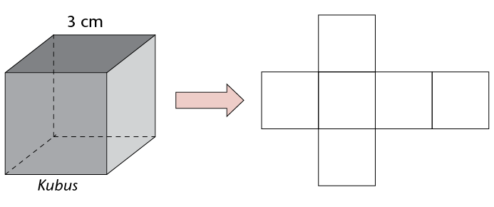
Oppervlakte van elke vlak = 3 cm \times 3 cm
Buite-oppervlakte = 6 \times 9 cm2
B
C
LEI FORMULES VIR
BUITE-OPPERVLAKTE AF
Die buite-oppervlakte
van 'n prisma = die som van die oppervlaktes van al sy
vlakke
1. (a) Gebruik die algemene formule
hier bo en die werk wat jy op die vorige bladsy
gedoen het om te bepaal watter van die volgende formules
korrek is. Merk die wat jy dink korrek is deur
'n in die
blokkie te maak.
 Buite-oppervlakte van 'n
kubus = 4 \times s
Buite-oppervlakte van 'n
kubus = 4 \times s
 Buite-oppervlakte van 'n
kubus = s \times
s \times
s \times
s
Buite-oppervlakte van 'n
kubus = s \times
s \times
s \times
s
 Buite-oppervlakte van 'n
kubus = 6 \times s2
Buite-oppervlakte van 'n
kubus = 6 \times s2
 Buite-oppervlakte van 'n
kubus = s6
Buite-oppervlakte van 'n
kubus = s6
(b) Verduidelik jou keuse.
2. (a) Skryf 'n formule vir die
buite-oppervlakte van enige
reghoekige prisma.
(b) Verduidelik jou
formule.
Wanneer 'n reghoekige prisma oopgevou word as plat
figuur, bestaan dit uit drie
stelle van twee identiese reghoeke. Twee van hulle is die
voor- en agtervlakke
van die prisma en die ander vier reghoeke verbind die
vlakke van die voor- en
agterkante aan mekaar.
3. (a) Skryf 'n formule vir die
buite-oppervlakte van enige
driehoekige prisma.
drie reghoekige vlakke (syvlakke)
(b) Verduidelik jou
formule.
Wanneer 'n driehoekige prisma oopgevou
en plat neergesit word, bestaan dit uit
twee driehoeke wat die vlakke van die
voor- en agterkante van die prisma is
en drie reghoeke wat die driehoekige
vlakke aan mekaar verbind.
4. Gebruik die
formules in vrae 1 tot 3 om die buite-oppervlaktes van die
kubus, die reghoekige prisma en die driehoekige prisma in vrae
1 tot 3 te bereken.
Buite-oppervlakte
van kubus:
Buite-oppervlakte van
reghoekige prisma:
Buite-oppervlakte van
driehoekige prisma:
BEREKENINGE OOR
BUITE-OPPERVLAKTE
Werk die buite-oppervlakte van
die
Onthou:
1 cm2 = 100 mm2 1 mm2 = 0,01 cm2
1 m2 = 10 000 cm2 1 cm2 = 0,0001 m2
1 km2 = 1 000 000 m2 1 m2 = 0,000001 km2
volgende vier voorwerpe
uit. Gee al die antwoorde in cm2.
Dit mag 'n goeie idee wees om eers 'n
skets van die net te maak voordat jy die berekening
doen.
1.
5.3 Volume van 3D-voorwerpe
LEI
FORMULES AF OM VOLUME TE BEREKEN
Dink aan 'n prisma
en sy basis. As jy die basis
Syvlakke is die vlakke
wat nie basisse is nie.
tussen die syvlakke van die
prisma sou opwaarts
beweeg,dan sal die oppervlakte van
die basis oral presies dieselfde bly.
Volume van 'n prisma
= Oppervlakte van basis \times hoogte
Gebruik die algemene formule
hier bo om 'n formule
Volume is die
hoeveelheid ruimte wat 'n voorwerp beslaan.
vir die volume van 'n kubus,
reghoekige prisma en driehoekige prisma te
skryf.
A. Kubus B. Reghoekige
prisma
Nota oor reghoekige prisma
Moenie deurmekaar raak
nie met:
-
•
die basis van die prisma en die basis van die
driehoekige vlak van die prisma
-
•
die hoogte van die prisma en die hoogte van die
driehoekige vlak van die prisma.
C. Driehoekige prisma
Jy behoort die volgende
formules vir volume gevind het:
Volume van 'n
kubus = s3 or s \times s \times s
Volume van 'n
reghoekige prisma = l \times b \times h
Volume van 'n
driehoekige prisma =  ( basis \times h) \times hoogte van
prisma
( basis \times h) \times hoogte van
prisma
Omdat ons met drie
dimensies vermenigvuldig, is die eenhede wat gebruik
word kubieke eenhede, bv. mm3, cm3 of m3.
BEREKEN DIE
VOLUME
Bereken
die volume van die volgende voorwerpe met behulp van die
formules hier bo.
5.4 Verband tussen buite-oppervlakte en
volume
Het voorwerpe met dieselfde
volume altyd dieselfde buite-oppervlakte? Ondersoek dit en vind
uit!
1. (a) Bereken die buite-oppervlakte
en volume van die reghoekige prismas deur die
tabel hier onder te voltooi.
|
|
|
|
|
|
|
12
|
2
|
1
|
76
|
24
|
|
8
|
3
|
1
|
70
|
24
|
|
6
|
4
|
1
|
68
|
24
|
|
4
|
3
|
2
|
52
|
24
|
|
2
|
2
|
6
|
56
|
24
|
|
1
|
1
|
24
|
98
|
24
|
(b) Skryf 'n ander stel afmetings
(l, b en h) in die laaste ry van
die tabel wat dieselfde volume, maar 'n ander
buite-oppervlakte sal gee as die wat reeds opgeteken
is.
2. Bestudeer die voltooide
tabel. Wat kan jy van die buite-oppervlakte en die
volume van voorwerpe aflei?
3. 'n Reghoekige
prisma het 'n volume van 8 m3. Skryf twee moontlike
stelle afmetings daarvoor neer. Teken die prismas hier onder en
skryf die afmetings op jou skets.
4. Die tabel wys
berekeninge van die buite-oppervlakte en volume vir
kubusse met verskillende sylengtes.
|
|
|
|
|
1
|
6
|
1
|
|
2
|
24
|
8
|
|
3
|
54
|
27
|
|
5
|
150
|
125
|
|
8
|
384
|
512
|
|
10
|
600
|
1
000
|
(a) Kyk na die tweede kolom.
Vermeerder of verminder die buite-oppervlakte as die
sylengte van die kubus vermeerder?
(b) Kyk na die derde kolom. Vermeerder
of verminder die volume as die sylengte van die
kubus vermeerder?
(c) Wat vermeerder vinniger as die
sylengte van die kubus vermeerder, die volume of
die buite-oppervlakte?
(d) Skets 'n grafiek wat die
geheelbeeld van volume teenoor buite-oppervlakte
gee.

5.5 Herleiding tussen kubieke eenhede
HOEVEEL
KUBUSSE?
1. Die kleiner
kubus hier onder se afmetings is 1 cm \times 1 cm \times 1 cm
en sy volume is 1 cm3. Hoeveel 1
cm3-kubusse is
nodig om 'n kubus met afmetings van
10 cm \times 10 cm \times 10 cm (soos
hier onder gewys) te vorm?
2. Hoeveel 10 cm \times 10
cm \times 10 cm kubusse is nodig om 'n 100 cm \times 100 cm
\times 100 cm kubus te vorm?
3. (a) Om 'n 1 000
cm3-kubus te vorm, het jy
dus 1 000 kubusse met 'n volume van
1 cm3 nodig. Hoeveel kubusse
van 1 000 cm3 (10 cm \times 10 cm
\times 10 cm) is nodig om 'n kubus van 100 cm
\times 100 cm \times 100 cm te vorm?
(b) Wat is die nuwe
kubus se volume?
(c) Hoeveel 1 cm3-kubusse sal 'n kubus
met 'n volume van 1 000 000 cm3 vorm?
4. Watter van die kubusse
hier onder het die grootste volume? Verduidelik.
A. 'n Kubus met 'n volume van 1
m3
B. 'n Kubus met 'n volume van 1
000 000 cm3
100 cm is gelyk aan 1 m, dus is 100 cm \times 100 cm
\times 100 cm = 1 000 000 cm3
Dit is ekwivalent aan 1 m \times 1 m \times 1 m =
1 m3.
5. (a) Hoeveel 1 mm \times 1 mm \times 1 mm
kubusse (1 mm3)
is nodig om 'n 1 cm \times 1 cm \times 1 cm kubus
te bou?
(b) Wat is die totale volume van die 1
mm3-kubusse binne in die 1
cm3-kubus?
OEFEN OM TUSSEN EENHEDE TE
HERLEI
Wanneer jy met volume werk,
moet jy dikwels tussen verskillende kubieke eenhede herlei.
Hier is twee voorbeelde hoe jy ekwivalente eenhede kan
uitwerk.
Herlei
cm3
na mm3: Herlei cm3 na m3:
1 cm3 = 1 cm \times 1 cm \times 1
cm 1 cm3 = 1 cm
\times 1 cm \times 1 cm
= 10 mm \times 10 mm \times 10 mm = 0,01 m
\times 0,01 m \times 0,01 m
= 1 000 mm3 = 0,000001 m3
∴
vermenigvuldig met 1 000 ∴
vermenigvuldig met 0,000001 of deel met 1 000 000
1. Skryf die
volgende volumes in cm3.
(a) 3 mm3 (b) 45 mm3
(c) 0,6 m3 (d) 1,22 m3
2. Skryf die
volgende volumes in mm3.
(a) 20 cm3 (b) 151 cm3
(c) 4,7 cm3 (d) 89,5 cm3
3. Skryf die
volgende volumes in m3.
(a) 9 cm3 (b) 50 cm3
(c) 643 cm3 (d) 1 967 cm3
4. Skryf die
volgende antwoorde in cm3.
(a) 4 m3 + 68 cm3 (b) 12 m3 + 143 cm3

5.6 Kapasiteit van 3D-voorwerpe
VERSKIL
TUSSEN KAPASITEIT EN VOLUME
Kapasiteit is die
hoeveelheid ruimte
Volume is die hoeveelheid
ruimte wat die voorwerp self opneem.
beskikbaar binne-in 'n voorwerp of
houer.
1. Die afmetings van 'n
soliede blok hout is 30 cm \times 20 cm \times 10
cm.
(a) Wat is sy volume?
Dieselfde blok hout word uitgekerf om
'n houer
wat hol is te maak. Die afmetings
binne die houer is 25 cm \times 15 cm \times 8 cm.
(b) Hoe dik is die rante van
die houer?
(c) Wat is die kapasiteit van die
houer?
(d) Watter volume water sal die houer
bevat as jy dit met water vul?
2. Meer hout word
uit die houer gekerf om die sykante en die bodem 1 cm dik te
maak. Bereken die kapasiteit van die houer in liter.
VERPLASING EN MEER
BEREKENINGE OOR KAPASITEIT
'n Glashouer is halfvol water.
As jy albasters
in die water sit, styg die vlak
van die water. Dit is nie omdat die
hoeveelheid water vermeerder het nie, maar omdat
die albasters die plek van die water
ingeneem het en die water dus hoër op
in die houer
gestoot het. Ons sê
dit het die water verplaas.
As een albaster 'n volume van 1
cm3
hetsal dit 1 ml water verplaas.
∴ Ons weet dus
dat:
Verplaas beteken om iets
uit sy plek te stoot.
1. Bereken die
kapasiteit van die houers. Die binnemate is gegee. Skryf al
die antwoorde in ml of kl.
(a) (b)
2. Werk 'n
moontlike stel binnemate uit vir 'n houer met 'n kapasiteit van
12 kl. Maak 'n netjiese skets en skryf die
afmetings langs die skets.
Wanneer ons die datasiklus
volg, doen ons die volgende: ons stel 'n vraag, versamel data
om die vraag te beantwoord, organiseer en som die data sinvol
op, stel die data op bruikbare maniere voor, interpreteer en
ontleed dit, en doen dan verslag daaroor.
Die aktiwiteite in hierdie hoofstuk gaan
jou oefening gee daarin om data in te samel, te organiseer en
op te som. Jy gaan onder meer fokus op maniere om geskikte
steekproewe vir 'n ondersoek te neem en hoe om vraelyste met
meervoudigekeuse-vrae op te stel en te gebruik. Daarna
gaan jy data organiseer deur telstrepies, tabelle,
stingel-en-blaarvoorstellingsen gegroepeerde data te
gebruik. Laastens gaan jy data opsom deur die gemiddelde,
mediaan, modus en verspreidingswydte van die data te
beskryf.
6.1 Versamel data 89
6.2 Organiseer data 94
6.3 Som data op: sentrale
waardes en verspreiding 100
|
Nonkhanyiso
|
Saaliha
|
Herbert
|
|
Anna
|
Jennifer
|
Thabo
|
|
Mpho
|
Nomonde
|
Nomi
|
|
Nontobeko
|
Thandeka
|
Manare
|
|
Jonathan
|
Siza
|
Unathi
|
|
Sibongile
|
Prince
|
Gabriel
|
|
Dumisani
|
Duma
|
Hanna
|
|
Matsediso
|
Thandile
|
Simon
|
|
Chokocha
|
Nicholas
|
Miriam
|
|
Khanyisile
|
Jabulani
|
Sibusiso
|
|
Ramphamba
|
Nomhle
|
Mishack
|
|
Portia
|
Frederik
|
Peter
|
|
Erik
|
Lola
|
Maya
|
|
Jan
|
Adri
|
Thobele
|
|
Palesa
|
Jacob
|
Abraham
|
|
Kerishnie
|
Abdul
|
Sarita
|
|
Chris
|
Nina
|
Benjamin
|
|
Pieter
|
Doris
|
Cebisile
|
|
Jana
|
Ahmed
|
Zinzi
|
|
Duduzile
|
Gertruida
|
Nomcebo
|
|
Mohamed
|
Miemie
|
Tidimalo
|
|
Daniel
|
Erika
|
Otto
|
|
Qiniso
|
Zodwa
|
Ismael
|
|
Ofentse
|
Martinus
|
Andrew
|
|
Avhahumi
|
Muruwa
|
Sethunya
|
6
Versamel, organiseer en som data op
Die term datahantering dui op sekere
maniere waarop mense probeer sin maak van groot versamelings
waarnemings (data) oor dinge en gebeure in die alledaagse lewe.
Data kan oor enige onderwerp ingesamel word, byvoorbeeld oor
mense se menings oor politiek, of oor die mate van sukses wat
behaal word met die gebruik van 'n sekere medisyne. Data kan
ons help om besluite te neem en probleme in ons
leefwêreld op te los.
6.1 Versamel data
Om meer oor enige situasie uit te
vind, moet ons begin om vrae te vra en data in te samel.
Wanneer jy data insamel, moet jy die volgende in gedagte
hou:
- • wat jy wil
uitvind of watter vrae jy wil beantwoord
- • waar jy
die data gaan kry om die vrae te beantwoord (byvoorbeeld by
leerders in jou skool, jou familie en gemeenskap; of gaan jy
dit kry uit gepubliseerde bronne soos koerante, boeke en
tydskrifte)
- • by wie jy
die data gaan insamel (al die mense of 'n steekproef)
- • hoe jy die
data gaan insamel (met vraelyste of deur onderhoude te
voer).
BRONNE VAN DATA-INSAMELING
Soms kan jy data gebruik wat alreeds
deur ander mense of 'n organisasie ingesamel is.
Voorbeeld 1
Jou vraag is: Wat is die mees algemene vorm van
vervoer wat leerders in Suid-Afrika gebruik om by die skool uit
te kom?
Jy sal vind dat daar vir hierdie
vraag reeds data bestaan in 'n publikasie met die naam
Census@School 2009,
wat deur Statistiek Suid-Afrika uitgegee is. Jy kan dan hierdie
bestaande data aanbied en interpreteer.
Voorbeeld 2
Jou vraag is: Wat is die mees algemene vorm van
vervoer wat leerders in my skool gebruik om by die skool te
kom?
Hoor by die skoolhoof of sulke data
reeds by die skool ingesamel is. As die data nie bestaan nie,
of baie oud is, moet jy besluit waar om die data te kry. Jy kan
dan besluit om die data self by jou portuurgroep in te
samel.
Skryf vir elk van die volgende
ondersoekvrae wat of wie moontlik 'n geskikte bron van
inligting sal wees.
|
|
|
|
1. Van
watter tipe musiek hou tieners in my gemeenskap die
meeste?
|
My
portuurgroep (of tieners in my gemeenskap)
|
|
2.
Hoeveel verdien werkers by Modefabriek per week?
|
Die
werkers by Modefabriek
|
|
3. Wat
is die hoogte wat kremetartbome gewoonlik bereik?
|
Bestaande data (waarskynlik uit botaniese boeke of van
organisasies)
|
|
4. Hoe
oud is die leerders in graad R tot 7 in
Suid-Afrika?
|
Bestaande data (waarskynlik verkrygbaar van die
regering)
|
|
5.
Hoeveel mense in die Suid-Afrika het toegang tot
elektrisiteit?
|
Bestaande inligting (byvoorbeeld op die webblad van
Statistiek Suid-Afrika)
|
|
6.
Hoeveel mense in verskillende Afrika-lande het die
afgelope 5 jaar malaria gehad?
|
Bestaande inligting (byvoorbeeld op die webblad van die
Wêreld Gesondheidsorganisasie)
|
|
7. Het
my skool vanjaar meer of minder glasbottels herwin as
verlede jaar?
|
Moontlik uit bestaande data by die skool, of nuwe data
verkry van personeel in beheer van herwinning, of van
leerders wat glasbottels herwin
|
|
8.
Watter soort werkies doen kinders van 7 tot 10 jaar oud
in my buurt gewoonlik by die huis?
|
7-
tot 10-jariges in my buurt
|
|
9.
Hoeveel kinders onder 10 jaar in Suid-Afrika is
ingeënt om hulle teen kindersiektes te
beskerm?
|
Die
Departement van Gesondheid mag hierdie data
hê of gesondheidsnavorsers kon so 'n opname
gemaak het
|
POPULASIES EN STEEKPROEWE
Die populasie is die hele groep
mense (of dinge) waaromtrent jy iets wil uitvind.
'n Populasie is dikwels redelik groot. Die
grootte van die populasie hang af van dit wat jy wil uitvind.
Hoe groter die populasie, hoe moeiliker word dit om vir elke
lid van die populasie die vrae te vra wat jy wil vra.
Jy kan 'n kleiner groep individue uit die
populasie gebruik. So 'n groep, wat die hele populasie
verteenwoordig, word 'n steekproef (of 'n monster) genoem.
Voorbeelde
1. As jy 'n opname wil
maak die oor die gunstelingdisse van leerders in jou skool,
gaan jy nie tyd hê om elkeen in die skool daarna uit
te vra nie. Jy kan egter 'n groep leerders vra en hulle
antwoorde gebruik om afleidings of aannames te maak oor die
gunstelingdisse van alle leerders in jou skool. Ten einde jou
steekproef verteenwoordigend van die hele skoolpopulasie te
maak, sou jy probeer om leerders uit elke graad in die skool te
vra, met 'n goeie verspreiding oor die hele skool.
2. Gesondheidsnavorsers
kan inligting oor kinders insamel by huishoudings wat lukraak
gekies is in elke gemeenskap.
EWEKANSIGE STEEKPROEWE
'n Steekproef moet versigtig gekies
word om seker te maak dat dit die populasie verteenwoordig. Om
dit goed te verstaan, dink aan wat gebeur as jy 'n paar
boontjies kies uit 'n fles waar verskillende soorte boontjies
in afsonderlike lae is. As jy net 'n paar boontjies bo uithaal,
sal dit nie verteenwoordigend wees nie. As die boontjies egter
goed gemeng is, het elke boontjie 'n gelyke kans om gekies te
word. Die steekproef is dan verteenwoordigend of ewekansig.
Voorbeeld
Twee maniere waarop jy 'n ewekansige
steekproef van leerders uit jou skool kan kies:
1. Jy kan al die
klaslyste so sny dat elke leerder se naam op 'n aparte strokie
papier is. Meng die name dan deeglik en trek 30 name sonder om
te kyk.
2. Jy kan elke klaslys neem en
elke tiende naam op al die klaslyste kies.
Kyk weer na hierdie ondersoekvrae.
Watter van die steekproewe dink jy sal die populasie die beste
verteenwoordig? Merk jou keuse en gee 'n rede.
|
|
|
|
|
1.
Watter tipe musiek is die gewildste onder tieners in my
gemeenskap?
|
|
50 tieners
by 'n plaaslike skool
|
25 tieners
elk uit twee verskillende plaaslike skole
|
As
jy net een skool kies, verteenwoordig dit nie die hele
gemeenskap nie.
|
|
2.
Hoeveel geld verdien die 200 werkers by Modefabriek per
week?
|
|
Die werkers
by elke vierde werkstasie in die fabriek
|
Die 50
werkers wat tydens hul etensuur in groepe buite sit
|
As
jy werkers kies wat op 'n bepaalde manier optree, is
die steekproef nie ewekansig nie.
|
|
3. Hoe
hoog word kremetartbome gewoonlik?
|
|
Al die
kremetartbome in 'n afgemerkte gebied
|
Elke tweede
kremetartboom in 'n afgemerkte gebied
|
As
jy by al die bome in 'n gebied kan uitkom, kan hulle
almal gemeet word.
|
|
4. Wat
is die ouderdomme van leerders vanaf Gr R tot 7 in
Suid-Afrika?
|
|
Al die Gr R
tot 7 leerders in my skool
|
Tien
leerders in elke graad van Gr R tot 7 by drie
verskillende skole
|
Om
al die Suid-Afrikaanse skole te verteenwoordig, moet jy
'n steekproef uit verskillende gebiede maak en genoeg
leerders vir die steekproef kies.
|
|
5. Het
my skool vanjaar meer of minder glasbottels as verlede
jaar herwin?
|
|
Al die
glasbottels wat in een maand vanjaar en in dieselfde
maand verlede jaar herwin is
|
Die
glasbottels wat in een maand vanjaar en enige ander
maand verlede jaar herwin is
|
Vergelyk telkens dieselfde maand, sodat ander
omstandighede nie 'n invloed op die uitslag sal
hê nie.
|
Daar is nie streng korrekte
antwoorde nie. Elke steekproef mag voordele of nadele bo die
ander een hê. Gebruik hierdie aktiwiteit as
besprekingspunt oor steekproewe.
VRAELYSTE
Ons kan data op verskillende maniere
insamel, byvoorbeeld deur vraelyste, persoonlike onderhoude of
telefoniese onderhoude. In hierdie afdeling gaan jy met
vraelyste werk wat meervoudigekeuse-antwoorde het.
Hier is twee vrae met
meervoudigekeuse-antwoorde
'n Respondent is 'n persoon wat
die vrae beantwoord.
waaruit 'n respondent kan kies.
|
Hoe tevrede is jy met ons diens?
 Glad nie tevrede nie Glad nie tevrede nie
 Redelik tevrede Redelik tevrede
 Baie tevrede Baie tevrede
|
Wat is die kleur van jou
oë?
 bruin bruin
 groen groen
 blou blou
 ander ander
|
1. Stel 'n gepaste vraag
met meervoudigekeuse-antwoorde op om die volgende inligting te
kry:
(a) Waarop spandeer tieners hulle geld?
(b) Hoeveel tyd spandeer graad 8's elke dag
aan huiswerk?
|
Moontlike antwoorde:
(a) Op watter van hierdie items
spandeer jy die meeste van jou geld?
kos
 klere klere
 lugtyd lugtyd
 grimering of toiletware grimering of toiletware
 vermaak vermaak
|
(b) Hoeveel
tyd spandeer jy elke dag
aan
huiswerk?
 minder as 1 uur minder as 1 uur
 tussen 1 en 2 uur tussen 1 en 2 uur
 tussen 2 en 3 uur tussen 2 en 3 uur
 meer as 3 uur meer as 3 uur
|
2. Kies een van die vrae
hier bo. Skryf wat jy dink die beste steekproef sou wees as jy
hierdie ondersoek moes doen.
3. Kies een van jou twee
vrae en gebruik dit om die data in te samel. Bêre
die data wat jy ingesamel het. Jy gaan dit in die volgende
afdeling van hierdie hoofstuk gebruik.
6.2 Organiseer data
Die manier waarop ons data organiseer
en opsom hang af van die soort data wat ons het. Dit hang ook
af van wat ons met die data wil uitvind.
Kyk na die volgende stelle data. Bespreek elke
stel in jou groep en skryf dan neer wat julle wil uitvind en
wat julle dink met die data moet gebeur. (Moenie nou oor die
korrektheid van julle antwoorde besorg wees nie. In hierdie
hoofstuk gaan julle van verskillende maniere leer om data te
organiseer en op te som.)
1. Data ingesamel om uit te vind
watter weeksdag leerders sal pas vir 'n sokkeroefening:
Vyf-en-twintig leerders se keuse van 'n
dag vir sokkeroefening
Dinsdag Dinsdag Dinsdag Woensdag
Maandag Donderdag Dinsdag Vrydag Vrydag Vrydag Dinsdag
Donderdag Woensdag Woensdag Dinsdag Dinsdag Woensdag Maandag
Donderdag Dinsdag Dinsdag Woensdag Maandag Donderdag
Dinsdag
2. Data ingesamel om uit
te vind of 5-jarige kinders van 'n sekere dorpie 'n gesonde
liggaamsmassa het:
Liggaamsmassa van 25
kinders in kilogram, afgerond tot die naaste 0,5 kg
17 kg 16,5 kg 13,5 kg 14 kg 18 kg 18
kg 14 kg 21 kg 13,5 kg 15 kg 15 kg 14,5 kg
15,5 kg 19,5 kg 17 kg
17,5 kg 14 kg 14 kg 20 kg 14,5 kg 16 kg 18 kg 12 kg 16 kg 19
kg
3. Data ingesamel om uit
te vind hoeveel leerders 'n sekere tipe vraag in minder as 20
sekondes beantwoord:
Tyd (in
sekondes) deur 'n groep leerders benodig om 'n vraag te
beantwoord
20 25 24 33
13 26 10 19 39 31 11 16 21 17 11 34 14 15 21 18 17 38 16 21
25
4. Data ingesamel om die
maandelikse salarisse van werknemers van 'n klein sake-
onderneming te ontleed:
Die maandelikse
salarisse van tien werknemers
R8 000 R2
500 R75 000 R6 000 R7 500 R5 200 R4 800 R10 300 R15 000 R9
500
TELSTREPIES, TABELLE EN
STINGEL-EN-BLAARVOORSTELLINGS
Jy het in graad 7 geleer om
telstrepies en stingel-en-blaarvoorstellings te gebruik. Kom
ons hersien dit.
Ons kan telstrepies gebruik om data in
verskillende kategorieë aan te teken. Ons maak 'n
telstrepie ( | ) vir elke item wat ons tel. Ons groepeer die
telstrepies in groepe van vyf om hulle vinnig te kan tel.
As die getalle in 'n datastel
uit drie syfers bestaan (bv. 324 of 428), word die honderde
en tiene in die stingel-kolom geskryf. 32 | 4 sal dus 324
beteken.
Voorbeelde van telstrepies:
drie = |||
vyf = ||||
sewe = |||| ||
In die stingel-en-blaarvoorstelling
hier onder kan jy die volgende getalle sien:
12, 13, 20, 34, 35, 47, 49, 51, 53, 53, 53, 56,
59
Hierdie getalle strek van 12 tot 59;
die eerste syfers stel dus getalle van 10 tot 50 voor.
Waardes met dieselfde
stingel word in dieselfde ry geskryf. Verskillende blare met
dieselfde stingel word deur 'n spasie of 'n komma geskei. Die
eerste ry wys die getalle 12 en 13.
Sleutel
: 1 | 2 beteken 12
|
1
|
2, 3
|
|
2
|
0
|
|
3
|
4, 5
|
|
4
|
7, 9
|
|
5
|
1, 3, 3, 3,
6, 9
|
Die stingelkolom wys
die tiene-syfer van elke waarde.
Let op dat die
stingel-en-blaarvoorstelling ook vir ons wys hoe die datastel
lyk. Ons kan byvoorbeeld dadelik sien dat die meeste getalle
in die 50's is en daar slegs een getal in die 20's is.
Die blaarkolom wys
die ene-syfer van elke waarde.
1. Blaai terug na die
drie stelle data op bladsy 94. Voltooi die tabel om aan te toon
watter vorm van data-organisering jy vir elke stel sou gebruik.
Skryf ook 'n kort verduideliking.
|
|
|
|
A.
Gekose dag vir sokkeroefening
|
Ja,
ons kan telstrepies gebruik om te bepaal hoeveel
kinders elkeen van die dae verkies.
|
Nee, die data is nie numeries nie.
|
|
B.
Kinders se liggaamsmassa
|
Nee, die getalle herhaal nie baie nie. As jy hulle
groepeer, kan jy telstrepies gebruik om die getal in
elke groep te bepaal.
|
Ja.
Dit organiseer die getalle en wys ook hoe hulle
versprei is.
|
|
C. Tyd
geneem om 'n vraag te antwoord
|
Nee, slegs as die data gegroepeer was.
|
Ja.
Dit organiseer die getalle en wys ook hoe hulle
versprei is.
|
2. Gebruik die datastel oor die
dae wat leerders vir sokkeroefening verkies:
Vyf-en-twintig leerders se keuse van 'n
dag vir sokkeroefening
Dinsdag Dinsdag Dinsdag Woensdag
Maandag Donderdag Dinsdag Vrydag Vrydag Vrydag Dinsdag Donderdag
Woensdag Woensdag Dinsdag Dinsdag Woensdag Maandag Donderdag
Dinsdag Dinsdag Woensdag Maandag Donderdag Dinsdag
(a) Organiseer die data in 'n
telstrepietabel.
|
|
|
|
|
Maandag
|
|||
|
3
|
|
Dinsdag
|
||||
|||| |
|
11
|
|
Woensdag
|
||||
|
5
|
|
Donderdag
|
||||
|
4
|
|
Vrydag
|
||
|
2
|
Frekwensie is die getal
kere wat iets gebeur.
(b) Watter dag behoort hulle te kies vir die
sokkeroefening? Hoekom?
(c) Watter dag sal die slegste vir die
sokkeroefening wees? Hoekom?
3.
Zandile het data ingesamel oor die getal kledingstukke wat
elkeen van haar werkers per dag maak. Die antwoord het so
gelyk:
61, 58, 48, 59, 49, 51,
54, 67, 55, 70, 59, 60, 62, 59, 62, 63, 64, 48, 64, 55
(a) Maak 'n
stingel-en-blaarvoorstelling van die data.
Sleutel:
|
|
|
4
|
8,
8, 9
|
|
5
|
1,
4, 5, 5, 8, 9, 9, 9
|
|
6
|
0,
1, 2, 2, 3, 4, 4, 7
|
|
7
|
0
|
|
|
(b) Voltooi: Die meeste
waardes kom in die
voor.
(c) Hoeveel kledingstukke het die vinnigste
en die stadigste werker gemaak?
4. Gebruik die data wat jy in
vraag 3 op bladsy 93 ingesamel het.
(a) Besluit of 'n telstrepietabel of 'n
stingel-en-blaarvoorstelling die data die beste sal organiseer.
Gebruik dan die spasie hier onder om die data aan te teken.
|
Leerder se telstrepietabel. Hulle sal opmerk dat
telstrepies die data hier die beste voorstel, omdat die
stingel-en-blaarvoorstelling met numeriese data werk en
nie met kategoriese data nie.
|
(b) Wat wys jou telstrepietabel of die
stingel-en-blaarvoorstelling omtrent jou data?
GROEPEER DATA IN INTERVALLE
As daar baie data-items in 'n
datastel is, is dit dikwels nuttig om die data items in
klasintervalle te
groepeer.
Voorbeeld
Die hoogste waarde van elke
interval word nie by die interval ingesluit nie. 'n Hoogte
van 150 cm val dus in die interval 150–160
cm, en nie in die interval 140–150 cm
nie.
|
|
|
|
130–140
|
6
|
|
140–150
|
13
|
|
150–160
|
31
|
|
160–170
|
30
|
|
170–180
|
10
|
Hierdie is 'n gegroepeerde
frekwensietabel. Dit stel 90 waardes voor, maar die waardes
self word nie gewys nie. In plaas daarvan, word die frekwensie
van die waardes (met ander woorde die getal waardes) wat in
daardie interval voorkom, gewys.
1. Die tabel wys die
liggaamsmassas (in kg) van atlete wat aan 'n byeenkoms
deelneem.
|
55,2
|
56,1
|
58,4
|
59,3
|
60,6
|
61,2
|
61,7
|
63,4
|
|
63,2
|
64,2
|
65,9
|
66,5
|
66,7
|
67,3
|
67,8
|
68,0
|
|
70,5
|
72,9
|
73,4
|
74,1
|
74,8
|
75,9
|
76,7
|
78,7
|
(a) Groepeer die liggaamsmassas in 5 kg
intervalle. Skryf die intervalle hier neer.
(b) Gebruik 'n tabel om die frekwensie van
die waardes in elke klasinterval te wys. Maak die telstrepies
soos wat jy die items tel, sodat jy nie items uitlaat nie.
Skryf dan later die frekwensies neer, nadat jy die telstrepies
getel het.
|
Atlete se liggaamsmassas
|
Telstrepies
|
Frekwensies
|
|
55-60 kg
|
||||
|
4
|
|
60-65 kg
|
|||| |
|
6
|
|
65-70 kg
|
|||| |
|
6
|
|
70-75 kg
|
||||
|
5
|
|
75-80 kg
|
|||
|
3
|
(c) In watter intervalle kom die grootste
getal atlete voor?
2.
Die volgende datastel wys hoe lank atlete geneem het (in minute
en sekondes) om 'n bepaalde wedloop te voltooi.
|
34:30
|
34:59
|
35:36
|
36:58
|
40:08
|
40:55
|
41:33
|
43:18
|
|
44:26
|
45:40
|
48:13
|
48:49
|
49:15
|
50:08
|
52:09
|
53:36
|
(a) Groepeer die tye in gepaste intervalle.
Skryf die intervalle hier neer.
(b) Skryf die gegroepeerde data in
tabelvorm.
|
Wedlooptye
|
Frekwensies
|
|
30-35 min
|
2
|
|
35-40 min
|
2
|
|
40-45 min
|
5
|
|
45-50 min
|
4
|
|
50-55 min
|
3
|
(c) Hoe lank het die grootste groep atlete
geneem om die wedloop te voltooi?
3.
Kyk weer na die data oor hoe lank dit leerders geneem het om 'n
sekere vraag te beantwoord:
|
20 25 24 33
13 26 10 19 39 31 11 16 21 17 11 34 14 15 21 18 17 38
16 21 25
|
(a) Groepeer die data
in drie intervalle van 10 sekondes. Voltooi die tabel om die
gegroepeerde data te wys.
|
Antwoordtye (sekondes)
|
Telstrepies
|
Frekwensie
|
|
10–20
|
||||
|||| ||
|
12
|
|
20–30
|
||||
|||
|
8
|
|
30–40
|
||||
|
5
|
(b) Dink jy dat leerders ten minste 40
sekondes nodig het om hierdie soort vraag te beantwoord?
Verduidelik.
(c) Het meer leerders ten minste 20 sekondes
of meer geneem om die vraag te beantwoord as leerders wat
minder as 20 sekondes geneem het? Verduidelik.
6.3 Som data op: sentrale waardes en verspreiding
EEN GETAL NAMENS
BAIE GETALLE: DIE MODUS EN DIE MEDIAAN
1. 'n Boer wil weet hoe
goed die saad was wat hy gebruik het toe hy 'n bepaalde soort
pampoen geplant het. Hy tel dus die getal pampoene per plant in
'n steekproef met 20 plante. Die getal pampoene per plant word
hier onder gegee.
6 7 3 7 4 7
7 8 7 5 7 7 6 7 8 5 4 7 6 7
(a) Rangskik die data van die kleinste na
die grootste, om 'n duideliker beeld te kry.
(b) Die boer sê vir sy vrou:
Die meeste van die plante
het 7 pampoene, wat eintlik baie goed is. Dink jy dit is
'n goeie opsomming van die data, of moes hy iets meer
gesê het?
In sommige stelle data word
bepaalde waardes of items dikwels herhaal. Die waarde of die
item wat die meeste voorkom, word die modus genoem. Party stelle het
meer as een modus, terwyl ander weer geen modus het nie.
(c) Dink jy as die boer die volgende
gesê het, sou sy vrou beter ingelig wees oor die
pampoenplante?
Die getal pampoene
wissel tussen 3 en 8, maar daar is 7 pampoene op die meeste van
die plante.
2. Hierdie is die wiskunde
toetspunte uit 30 van 'n klein klassie met 21 leerders.
15 7 11 7 13 4 8 9 3 7 25 7 6 10
8 9 23 19 7 5 7
Bongile het 9 uit 30 vir die
toets gekry, wat swak is. Kan hy sê dat sy punt in
die boonste helfte van die klas val? Gee 'n goeie
verduideliking vir jou antwoord.
'n Stel data kan in 'n boonste helfte
en 'n onderste helfte verdeel word deur die data van die
kleinste na die grootste te rangskik en sodoende die middelste
waarde te kry.
Byvoorbeeld: Hierdie stel data
23 35 44 21 28 32 38 41 39 42 24
27
kan só herrangskik word:
Die getal halfpad tussen die hoogste
data-item in die onderste helfte, en die laagste data-item in
die boonste helfte is in dié geval 33,5 (berkening:
32 + 35 \div 2 = 33,5).
Die getal wat 'n stel data
in 'n boonste helfte en 'n onderste helfte verdeel, word die
mediaan
genoem.
Die helfte van die data-items is
bokant die mediaan, en die ander helfte van die data-items is
onder die mediaan. Om die mediaan te kry, moet die data-items
van die kleinste tot die grootste gerangskik word.
Wanneer 'n numeriese stel data 'n onewe getal
data-items het, is die mediaan gelyk aan die getal in die
middel van die stel as die items van die kleinste tot die
grootste gerangskik is:
3 4 5 6 7 7 7 7 7 7
8 9 9 10 11 13 15 19 23 25
3. Skryf enige elf getalle, wat
almal van mekaar verskil, neer sodat die mediaan 24 is.
4. Hier onder is die
liggaamsmassas van 25 leerders (in kg), afgerond tot die
naaste0,5 kg. Die data is ingesamel om te bepaal of 5-jarige
kinders in 'n sekere dorpie gesonde liggaamsmassas het.
17 16,5 13,5
14 18 18 14 21 13,5
15 15 14,5
15,5 19,5 17 17,5 14
14 20 14,5 16
18 12 16 19
Herrangskik hierdie data-items in 'n boonste
en 'n onderste helfte om te bepaal wat die mediaan-massa
is.
5. (a) Het die stel data voor
vraag 3 hier bo 'n modus? Indien wel, wat is dit?
(b) Wat is die modus van die stel data in
vraag 2 op bladsy 96?
SÊ NOU HULLE WAS
ALMAL GELYK... MAAR HULLE IS NIE

1. Vyf hoenders word op
'n skaal geweeg en die skaal wys 6,500 kg wat dieselfde is as6
500 g. Wat sal jy kan sê as iemand jou sou vra:
Wat weeg elke hoender?
2. Die eienaar van 'n
padstal het 10 waatlemoene om te verkoop. Hulle is nie almal
ewe groot nie en hy het hulle teen verskillende pryse by die
boer gekoop. Hy weeg dus die waatlemoene en besluit om hulle
teen die volgende pryse te verkoop:
R16 R16 R18 R15 R14 R14 R16 R14 R13
R14
(a) Kyk of jy saamstem dat hy R150 vir al 10
waatlemoene saam sal kry.
(b) By nadenke besluit die eienaar egter om
al die waatlemoene teen dieselfde prys te verkoop, om dit
makliker te adverteer en te verkoop. Teen watter bedrag moet hy
elkeen verkoop as hy nog steeds R150 vir almal saam wil
kry?
3. Susan het 6
boerpampoene op die mark gekoop. Haar man, Abraham, wil weet
wat sy vir elke pampoen betaal het. Susan sê:
Hulle was teen verskillende pryse
gemerk, maar ek het die pryse nou vergeet. Ek weet egter dat ek
altesaam R72 betaal het, so dit sou dieselfde wees asof ek vir
elkeen R12 betaal het. So jy kan sê dat ek gemiddeld
R12 elk betaal het.
(a) Toets of Susan se antwoord aan haar man
reg is. Die werklike pryse vir die verskillende pampoene word
hier onder gegee.
R7 R15 R10 R16 R9 R15
(b) Hoe dink jy het Susan by R12 uitgekom
toe sy haar man se vraag beantwoord het?
(c) Toets of Susan se antwoord reg sou wees
as die werklike pryse van die pampoene die volgende was:
R11 R12 R13 R11 R12 R13
Toe sy haar man
se vraag beantwoord het, het Susan die getal 12 as 'n
"opsomming" gebruik om die ses verskillende getalle 7; 15; 10;
16; 9 en 15 voor te stel. Die getal 12 is 'n goeie
verteenwoordiging van 7; 15; 10; 16; 9 en 15 saam, want
|
7
|
+
|
15
|
+
|
10
|
+
|
16
|
+
|
9
|
+
|
15
|
|
=
|
12
|
+
|
12
|
+
|
12
|
+
|
12
|
+
|
12
|
+
|
12
|
As elke waarde in 'n stel
data deur dieselfde getal vervang word en die totaal
dieselfde bly, word die "vervangingsgetal" die gemiddelde genoem.
4. Kyk weer na vraag 1 op
bladsy 102 oor die vyf hoenders. As jy nou 'n ander antwoord as
vantevore wil gee, skryf dit hier onder neer.
5. 'n Joernalis ondersoek
die prys van witbrood by verskillende winkels in twee groot
stede. Die prys in sent by 10 verskillende winkels in elke stad
word hier onder gegee.
|
Stad A:
|
927
|
885
|
937
|
889
|
861
|
904
|
899
|
888
|
839
|
880
|
|
Stad B:
|
890
|
872
|
908
|
910
|
942
|
924
|
900
|
872
|
933
|
948
|
(a) As jy na bostaande data kyk, dink jy 'n
mens kan sê dat witbrood in een stad goedkoper is as
in 'n ander stad? Kyk goed en gee redes vir jou antwoord.
(b) Bereken die gemiddelde prys van witbrood
vir die steekproef in elk van die stede.
(c) Bepaal die mediaan-broodprys in elkeen
van die twee stede se steekproef.
6. Geoffrey is 'n veeboer. Hy
koop 21 bokooie teen 'n gemiddelde prys van R830 elk.
(a) Hoeveel kos die 21 bokke in totaal?
(b) Een van die bokke is 'n stoetooi
waarvoor Geoffrey R4 800 betaal het. Wat was die gemiddelde
prys van die ander 20 bokke?
7. (a) Bepaal die gemiddelde en die mediaan
van die volgende stel data.
11111111222222
130
(b) Skryf tien getalle neer sodat die
gemiddelde baie kleiner as die mediaan is.
(c) Skryf tien getalle neer sodat die
gemiddelde baie groter as die mediaan is.
(d) Skryf tien getalle neer sodat die
gemiddelde gelyk is aan die mediaan.
8.
Hier is die tye van hoe lank, in sekondes, dit die verskillende
leerders in graad 8A van 'n bepaalde skool geneem het om vraag
7(b) hier bo te doen.
|
20
|
30
|
36
|
14
|
20
|
14
|
29
|
39
|
15
|
37
|
35
|
24
|
|
|
29
|
29
|
18
|
16
|
38
|
13
|
24
|
27
|
22
|
38
|
29
|
11
|
38
|
Hier is die tye van hoe lank, in sekondes,
dit die verskillende leerders in graad 8B van dieselfde skool
geneem het om vraag 7(b) te doen.
|
20
|
22
|
39
|
22
|
16
|
37
|
36
|
15
|
14
|
13
|
16
|
10
|
14
|
|
26
|
11
|
14
|
31
|
17
|
11
|
28
|
39
|
20
|
35
|
26
|
20
|
|
Watter klas werk die vinnigste? Verduidelik
jou antwoord baie goed.
HOE WYD IS DIE DATA
VERSPREI?
1. Twee steekproewe word
geneem van eiers wat op twee verskillende plase geproduseer
word, om die massa van die eiers van die twee plase te
ondersoek.
Die gemiddelde massa van
plaas A se eiers is 50,6 g en die mediaan-massa is 51,5 g.
Die gemiddelde massa van
plaas B se eiers is is 50,3 g en die mediaan-massa is 52,0
g.
(a) Dui hierdie getalle daarop dat die eiers
van die twee plase soortgelyke massas het, of dat hulle
verskil?
(b) Die werklike massas van die eiers in die
twee steekproewe is hier onder gegee. Kontroleer of die
gemiddelde en mediaan-massa wat hier bo gegee is, korrek
is.
Massas van die steekproef eiers vanaf plaas
A, in gram:
|
51
|
54
|
45
|
53
|
49
|
54
|
55
|
46
|
54
|
45
|
Massas van die steekproef eiers vanaf plaas
B, in gram:
|
53
|
52
|
55
|
44
|
57
|
41
|
59
|
43
|
47
|
52
|
(c) Op watter wyse verskil die massas van
die eiers van die twee plase?
Die
variasiewydte
of omvang van 'n stel data
is die verskil tussen
die maksimum (hoogste of
boonste waarde) en die minimum (laagste of
onderste waarde).
Hierdie datastel se waardes wissel van 36
tot 60, dus is die variasiewydte 60 - 36 = 24.
|
36
|
36
|
39
|
39
|
43
|
45
|
46
|
47
|
52
|
52
|
53
|
55
|
57
|
60
|
2. Die volgende data toon
die eksamenpunte van twee groepe leerders.
Groep 1: 30 31 35 50 55 58 60 70 78 80 88 88
90 90
Groep 2: 55 55 56 57 59 59 59 67 69 75 80 80
80 81
Vergelyk die twee groepe met mekaar deur die
volgende stellings te voltooi.
(a) Die punte in groep 1
wissel van
tot
, 'n variasiewydte van
.
(b) Die punte in groep 2
wissel van
tot
, 'n variasiewydte van
.
3. Hierdie twee stelle
data toon die pryse van huise wat in dorpe A en B in een maand
verkoop is:
Dorp A: R321 000 R199 000 R181 000 R303
000
R299 000 R248 000 R283 000 R315 000
R405 000 R380 000 R322 000
Dorp
B: R88 000 R122 000 R175 000 R166 000 R107 000 R105 000
R1 114 000 R100 000
R151 000 R1 199 000 R146 000
(a) Lees deur die pryse in elke lys en skryf
enige gedagte neer wat by jou opkom wanneer jy na die twee
stelle syfers kyk.
(b) Jy is gevra om 'n kort paragraaf vir die
plaaslike koerant te skryf oor huispryse in die twee dorpe. Jy
wil dit vinnig en maklik vir die lesers maak om 'n idee te kry
van huispryse in die twee dorpe. Werk in die ruimte hier onder
en skryf dan jou koerantparagraaf netjies in die raam onderaan
die bladsy.
Hopelik sal die leerders besluit om die pryse
in elke lys in of stygende of dalende
orde te rangskik soos hier onder getoon. Die
volgende lig die belangrikste
eienskappe van die twee stelle data uit:
In dorp A wissel die pryse tussen R181 000 en
R405 000.
In dorp B is die meeste pryse baie laer. Hulle
wissel tussen R88 000 en R175 000,
maar daar is twee huise wat meer as 'n miljoen
rand elk kos.
Dorp A: R181 000 R199 000 R248 000
R283 000
R299 000 R303 000 R315 000 R321 000
R322 000 R380 000 R405 000
Dorp B: R88 000 R100 000 R105 000 R107
000
R122 000 R146 000 R151 000 R166 000
R175 000 R1 114 000 R1 199
000
Die gemiddelde huisprys in dorp A is
R296 000 wat baie naby die mediaan van R303 000 is. Al die
huispryse in dorp A is binne R115 000 vanaf die gemiddelde.
Die gemiddelde huisprys in dorp B is R315 727,
wat meer as dubbel die mediaanprys van R146 000 is. Nege van
die elf huise in dorp B kos baie minder as die gemiddelde,
terwyl dorp A se pryse eweredig versprei is aan beide kante van
die gemiddelde.
4. Iemand vra jou oor die
huispryse in dorpe A en B, en jy sê: Die gemiddelde huisprys in dorp A is
R296 000, en die gemiddelde huisprys in dorp B is R315
727.
(a) Bied jou antwoord genoegsame inligting
omtrent die verskil in die huispryse van die twee dorpe? Op
watter manier kan dit misleidend wees?
(b) Wat veroorsaak dat die gemiddelde 'n
misleidende manier is om die data van die huispryse in dorp B
uit te druk?
Data-items soos die huispryse van R1
114 000 en R1 199 000 in die dorp B-lys in vraag 3 word
uitskieters genoem.
Uitskieters is datawaardes wat baie laer of baie
hoër as enige van die ander waardes in die datastel
is. Die gemiddelde is nie 'n goeie manier om 'n datastel met
uitskieters op te som nie.
5. (a) Is daar 'n uitskieter in hierdie
datastel van maandelikse salarisse van die werknemers by 'n
klein sakeonderneming?
R8 000 R2 500 R75 000 R6 000 R7 500
R5 200 R4 800 R10 300 R15 000 R9 500
(b) Sou die mediaanpryse van die twee stelle
data 'n goeie manier wees om die belangrikste verskil tussen
huispryse in dorpe A en B in vraag 3 uit te lig? Verduidelik
jou antwoord.
In die vorige hoofstuk het ons
aandag gegee aan die insameling, organisering en opsomming van
data. Nou gaan ons op die voorstelling van data in
staafgrafieke, dubbele staafgrafieke, histogramme,
sirkeldiagramme en gebroke-lyngrafieke fokus. In vorige grade
het jy reeds geleer hoe om data op al hierdie maniere, behalwe
as gebroke-lyngrafieke, voor te stel.
7.1 Staafgrafieke en dubbele
staafgrafieke 111
7.2 Histogramme 116
7.3 Sirkeldiagramme 120
7.4 Gebroke-lyngrafieke
122
7
Stel data voor
7.1 Staafgrafieke en dubbele staafgrafieke
HERSIEN
STAAFGRAFIEKE EN DUBBELE STAAFGRAFIEKE
'n Staafgrafiek wys gewoonlik
kategorieë (of klasse) data op die horisontale as,
en die frekwensie van elke kategorie op die vertikale as,
byvoorbeeld:
'n Dubbele staafgrafiek wys twee
stelle data in dieselfde kategorie op dieselfde assestelsel.
Die grafiek hier onder wys die persentasie huishoudings met
toegang tot die internet by die huis, of waar ten minste een
lid toegang het, volgens provinsie, in 2012.
STEL DATA IN STAAFGRAFIEKE EN
DUBBELE STAAFGRAFIEKE VOOR
1. Padongelukke is 'n
groot probleem in Suid-Afrika, veral gedurende die
vakansieseisoen. Statistiek oor padongelukke word gepubliseer
om mense van hierdie probleem bewus te maak.
(a) Rond die getalle in die tweede kolom af
tot die naaste honderd en skryf jou antwoorde in die derde
kolom.
|
|
|
|
|
2002
|
3
661
|
3 700
|
|
2003
|
4
445
|
4 400
|
|
2004
|
5
234
|
5 200
|
|
2005
|
5
443
|
5 400
|
|
2006
|
5
639
|
5 600
|
(b) Teken 'n staafgrafiek van die afgeronde
getalle.
(c) Watter tendens neem jy in hierdie data
waar?
(d) Dink jy die feit dat jy die data
afgerond het kan enige verskil in hierdie soort voorstelling
van die data maak? Verduidelik.
2. Data oor padongelukke
kan op verskillende maniere ontleed word. Die tabel hier onder
wys die soorte voertuie en die getal ongelukke waarin hulle
betrokke was in 2011. Die data is van die Kom Veilig
Tuis-veldtog verkry.
|
|
|
|
|
Motors
|
6
381
|
6 400
|
|
Minibusse
|
1
737
|
1 700
|
|
Busse
|
406
|
400
|
|
Motorfietse
|
289
|
300
|
|
LAV's en
Bakkies
|
2
934
|
2 900
|
|
Vragmotors
|
861
|
900
|
|
Ander en
onbekend
|
1
161
|
1 200
|
|
Totaal
|
13 769
|
13 800
|
(a) 'n Groot gedeelte van die data sluit
"ander en onbekende" voertuie in. Wat kan die rede hiervoor
wees?
(b) Watter soort inligting ontbreek in die
tabel? Wat behoort ons te weet om 'n beter prentjie van hierdie
ongelukke te kan kry?
(c) Watter soort voertuig is in die grootste
getal ongelukke betrokke? Beteken dit dat hierdie sort voertuig
die onveiligste is? Verduidelik.
(d) Rond die data in die tabel op die vorige
bladsy af tot die naaste honderd en teken dan hier onder 'n
staafgrafiek van die data.

3. Statistiek Suid-Afrika
het die volgende data in hulle Algemene Huishouding-opname van
2012 bekend gemaak.
Persentasie mense 20 jaar en ouer
sonder formele skoolopleiding
|
|
|
|
|
|
|
|
|
|
|
|
4,4
|
12,5
|
16,5
|
10,0
|
11,8
|
14,6
|
4,5
|
17,1
|
20,1
|
|
|
1,5
|
6,4
|
8,5
|
4,8
|
7,8
|
8,8
|
1,9
|
10,6
|
11,6
|
(a) Hoekom dink jy is die data van 2012 met
die van 2002 vergelyk?
(b) Stel hierdie data met 'n dubbele
staafgrafiek op die volgende bladsy voor.
Persentasie mense
20 jaar en ouer met geen formele skoolopleiding nie
(c) Verduidelik die data vir Limpopo deur
die ontbrekende persentasies in te vul:
Die persentasie mense ouer as 20 in Limpopo
in 2002, wat nie formele skoolopleiding gehad het nie, was
. Die 2012-opname het getoon dat die
persentasie mense sonder formele skoolopleiding
was. Die verskil tussen die persentasies
is
.
(d) Watter provinsies het, volgens die
grafiek, die minste verandering getoon in die persentasie mense
met geen formele skoolopleiding nie? Verduidelik hoe jy dit
weet en hoekom jy dink dat dit die geval is.

7.2 Histogramme
WAT HISTOGRAMME
VOORSTEL
'n Histogram is 'n grafiek van die
frekwensies van data in verskillende klasintervalle, soos in die
voorbeeld hier onder gewys. Elke klasinterval word gebruik vir
'n sekere omvang van waardes. Die verskillende klasintervalle
is opeenvolgend en kan nie waardes hê wat oorvleuel
nie. Die data kan voortgebring word deur te tel of deur te
meet.
'n Histogram lyk 'n bietjie soos 'n
staafgrafiek, maar dit word gewoonlik getrek sonder spasies
tussen die stawe.
Voorbeeld
Die getal lemoene wat van 60 bome in
'n boord geoes is, word hier onder gegee.
|
830
|
102
|
57
|
726
|
400
|
710
|
333
|
361
|
295
|
674
|
927
|
945
|
|
276
|
792
|
787
|
765
|
540
|
785
|
305
|
104
|
88
|
203
|
224
|
974
|
|
852
|
716
|
790
|
145
|
755
|
661
|
728
|
637
|
319
|
221
|
766
|
764
|
|
397
|
734
|
856
|
775
|
330
|
659
|
211
|
918
|
345
|
360
|
518
|
822
|
|
818
|
727
|
346
|
279
|
804
|
478
|
626
|
324
|
478
|
471
|
69
|
462
|
Die frekwensies van bome met getalle
lemoene in bepaalde klasintervalle word in hierdie tabel
gewys.
|
|
|
|
0–200
|
6
|
|
200–400
|
17
|
|
400–600
|
7
|
|
600–800
|
20
|
|
800–1 000
|
10
|
Ons volg die konvensie dat die
hoogste waarde (ook die boonste grens genoem) van elke
klasinterval nie by die interval ingesluit word nie. Die
waarde 400 is dus in die 400–600 interval
ingesluit en nie in die 200–400 interval
nie.
Hier is 'n histogram van die
bostaande data.
STEL DATA IN HISTOGRAMME
VOOR
1. In die 2009
Census@School opname is die leerders van graad 3 tot 7 by 'n
bepaalde skool gevra hoe lank (in minute) dit hulle neem om by
die skool te kom. Die tabel wys die resultate van 'n steekproef
van 120 leerders.
|
|
|
|
0–10
|
15
|
|
10–20
|
48
|
|
20–30
|
34
|
|
30–40
|
14
|
|
40–50
|
6
|
|
50–60
|
1
|
|
60–70
|
2
|
(a) In watter interval word 'n tyd van 30
minute aangedui?
(b) Teken 'n histogram om hierdie data voor
te stel.
(c) Beskryf
in jou eie woorde wat die histogram wys.
(d) Hoe verwag jy sal hierdie data vir 'n
skool in 'n landelike gebied lyk?
2. Maatskappy A
vervaardig gloeilampies. Hulle wil uitvind hoeveel ure (h)
hulle gloeilampies hou sodat hulle die data kan gebruik om
verkope van die gloeilampies te bevorder. Hulle ondersoek 'n
steekproef van 200 gloeilampies direk vanuit die fabriek. Dit
is die data wat hulle insamel.
|
|
300–350
|
350–400
|
400–450
|
450–500
|
500–550
|
|
|
15
|
25
|
70
|
50
|
40
|
(a) Teken 'n histogram van hierdie data.
(b) Maatskappy B, wat soortgelyke
gloeilampies maak, doen 'n soortgelyke eksperiment en kry die
volgende resultate. Teken 'n histogram van die data.
|
|
300–350
|
350–400
|
400–450
|
450–500
|
500–550
|
|
|
7
|
11
|
24
|
18
|
0
|

(c) Lewer kommentaar op die verskil tussen
die twee histogramme.

7.3 Sirkeldiagramme
'n Sirkeldiagram bestaan uit 'n
sirkel wat in sektore (snye) verdeel is. Elke sektor wys een
datakategorie. Groter kategorieë data bestaan uit
groter snye data. Die grafiek wys watter deel elke kategorie
tot die geheel bydra.
Voorbeeld
SKAT DIE GROOTTE VAN SNYE IN 'N
SIRKELDIAGRAM
In graad 7 het jy geleer om die
breukdele of persentasies van 'n sirkel te skat om 'n
sirkeldiagram te kan teken.
1. (a) Voltooi die sirkeldiagram om te wys
dat
 van die klas skool toe stap,
met
van die klas skool toe stap,
met
die trein en  met 'n motor skool toe kom.
met 'n motor skool toe kom.
(b) Bepaal watter persentasie leerders:
stap
kom per trein
kom met 'n motor
(c) Daar is 40 leerders in die klas. Bepaal
hoeveel leerders:
stap
kom per trein
kom per motor
2. Hierdie data wys die
vlak van skoolopleiding wat 'n groep mense voltooi het.
|
|
|
|
|
|
'n Paar
primêre skoolgrade
|
36
|
 = =  of of 
|
 \times \times  = 20% = 20%
|
|
Alle
primêre skoolgrade
|
54
|
 = = 
|
 \times \times  = 30% = 30%
|
|
'n Paar
hoërskoolgrade
|
72
|
 = =  = = 
|
 \times \times  = 40% = 40%
|
|
Alle
hoërskoolgrade
|
18
|
 = = 
|
 \times \times
 = 10% = 10%
|
|
Totaal
|
180
|
|
100%
|
(a) Hoeveel mense is daar in
die hele groep?
(b) Voltooi die derde kolom deur uit te werk
watter breuk elke kategorie van die hele groep uitmaakp.
(c) Voltooi die vierde kolom deur uit te
werk watter persentasie elke kategorie van die hele groep
uitmaak.
(d) Teken 'n
sirkeldiagram op die volgende bladsy om die data in die
voltooide tabel voor te stel. (Skat die grootte van die
snye.)

7.4 Gebroke-lyngrafieke
STIP
DATAPUNTE
1. Die
tabel wys die gemiddelde temperatuur in Bethal soos elke dag
aangeteken vir een week.
|
|
Ma
|
Di
|
Wo
|
Do
|
Vr
|
Sa
|
So
|
|
|
4
|
10
|
12
|
9
|
13
|
13
|
11
|
(a) Stip die data op die assestel hier
onder. Maak 'n kolletjie vir elke punt wat jy stip.
(b) Gebruik 'n liniaal om die kolletjies in
volgorde te verbind.
Jy het 'n gebroke-lyngrafiek in vraag
1 gekonstrueer.
'n Gebroke-lyngrafiek is 'n lyn
wat opeenvolgende datapunte wat op 'n assestel gestip is, met
mekaar verbind. Gebroke-lyngrafieke is nuttig om te wys hoe
iets oor 'n tydperk verander het of dieselfde gebly het.
TEKEN GEBROKE-LYNGRAFIEKE
Die tabel wys die inkomste uit Pam en
Luthando se onderskeie kleinsake-ondernemings oor 6 maande.
|
|
Januarie
|
Februarie
|
Maart
|
April
|
Mei
|
Junie
|
|
|
12
000
|
12
000
|
9
000
|
6
000
|
7
000
|
9
000
|
|
|
6
000
|
7
000
|
8
000
|
8
000
|
9
000
|
9
000
|
1. Teken 'n gebroke-lyngrafiek om
Pam se inkomste aan te toon.
2. Teken 'n gebroke-lyngrafiek om
Luthando se inkomste aan te toon.

3. Wie se inkomste lyk asof dit elke maand
bestendig toeneem?
VERGELYK VERSKILLENDE MANIERE OM
DATA VOOR TE STEL
Die tabel op die volgende bladsy wys
data van die 2012 Algemene Huishoudelike Opname (Statistiek
Suid-Afrika).
1. Is dit moontlik om die
gemiddelde, die mediaan en die modus van hierdie data te
bepaal? Verduidelik.
Wyse van skoolvervoer vir leerders as
getalle en as persentasies
|
|
|
|
|
Stap
|
Getal
|
10 549
|
|
Persentasie
|
68,9
|
|
Fiets/Motorfiets
|
Getal
|
90
|
|
Persentasie
|
0,6
|
|
Minibustaxi/motortaxi/
bakkietaxi
|
Getal
|
1 129
|
|
Persentasie
|
7,4
|
|
Bus
|
Getal
|
434
|
|
Persentasie
|
2,8
|
|
Trein
|
Getal
|
94
|
|
Persentasie
|
0,6
|
|
Minibus/bus
deur instansie/
regering
voorsien, maar nie betaal nie
|
Getal
|
209
|
|
Persentasie
|
1,4
|
|
Minibus/bus
deur instansie voorsien en betaal
|
Getal
|
88
|
|
Persentasie
|
0,6
|
|
Voertuig
deur 'n groep ouers gehuur
|
Getal
|
1 344
|
|
Persentasie
|
8,8
|
|
Eie of
ander privaatvoertuig
|
Getal
|
1 371
|
|
Persentasie
|
8,9
|
|
Subtotaal
|
Getal
|
15 308
|
|
Persentasie
|
100
|
2. Met watter twee soorte
grafieke sou jy hierdie data die beste kon voorstel?
Verduidelik jou antwoord.
3. Beskryf die voordele
van elkeen van hierdie maniere (die twee grafieke en die tabel)
vir hierdie spesifieke stel data.
4. Teken die twee grafieke wat jy
in vraag 2 genoem het, in jou oefeningboek.
In hierdie hoofstuk gaan jy
kritiese data-ontledingsvaardighede ontwikkel en inoefen. Dit
beteken dat jy na data waaroor daar verslag gedoen is sal kyk,
maar ook na die hele datahanteringsiklus wat gevolg is. Jy sal
ook moet besluit watter manier die beste is om data in 'n
gegewe situasie voor te stel en jy sal verskuilde data moet kan
identifiseer. Party maniere is meer geskik as ander om
verskillende tipes data op te som asook om sentrale neigings in
die data uit te wys. Jy moet ook bewus wees van maniere waarop
vooroordeel (sydigheid) in data kan voorkom of insluip
– in die beplanningsfase sowel as tydens
insameling, ontleding, voorstelling en/of opsomming van die
data.
8.1 Ontleed die insameling van
data krities 129
8.2 Ontleed die voorstelling
van data krities 132
8.3 Ontleed opsommende
statistiek krities 133
8
Interpreteer, ontleed en doen
verslag oor data
8.1 Ontleed die insameling van data krities
Die metodes van dataverkryging kan
soms lei tot vooroordeel, ook sydigheid genoem, en misleidende
data. Dit is nie noodwendig altyd die navorser se bedoeling nie
– dit gebeur dikwels as die bron van die
data of die metode van insameling nie deeglik beplan is
nie.
In hoofstuk 6 het jy geleer dat 'n steekproef
groot genoeg moet wees en lukraak uit die populasie gekies moet
word om te verseker dat dit verteenwoordigend is. As data slegs
uit 'n sekere deel van die populasie gekies word, kan daar
sydigheid ten gunste van daardie deel wees. Die navorser moet
bewus wees van al die plekke waar sydigheid kan voorkom en
behoort die hele datahanteringsproses so te ontwerp dat dit nie
gebeur nie.
Wanneer jy gepubliseerde statistiek lees, moet
jy altyd daarvan bewus wees dat jy ook inligting moet
hê oor hoe die data ingesamel is, wanneer dit
ingesamel is en hoe die steekproef gekies is. Data kan met
verloop van tyd verander, dus moet jy weet wanneer dit
ingesamel is. Hierdie inligting moet by elke verslaggewing oor
data gegee word.
DATABRONNE EN METODES VAN
INSAMELING
1. Lees die volgende paragraaf en
beantwoord die vrae wat daarop volg.
'n
Onlangse studie het onthul dat 50% van
hoërskoolleerders sigarette rook, 45% alkohol
gebruik en 60% dwelms misbruik. Dit is 'n aanduiding van die
algemene swak gesondheid en ook maatskaplike probleme van die
tieners in ons land.
(a) Stem jy saam dat die syfers hoog genoeg
is om tot die slotsom te kom dat die gewoontes van hierdie
tieners ongesond is?
(b) Kan ons aflei van die data
hierbo
-
• wat die
steekproef van die studie was
-
• waar
hierdie data ingesamel is
-
• wanneer
die data ingesamel is?
(c) Sou die data 'n betroubare beeld van al
die tieners in die land wees as die steekproef uit tien
tieners, wat almal in 'n gebied woon wat bekend is vir dwelm-
en alkoholmisbruik, bestaan het?
(d) Wat dink jy sou 'n beter steekproef
gewees het?
(e) Hoekom is dit belangrik om te weet
wanneer hierdie data ingesamel is?
2. Hierdie sirkeldiagramme toon
toiletgeriewe van huishoudings in Suid-Afrika.
Sirkeldiagram A Sirkeldiagram B
(a) Watter soort toiletgeriewe het die
meeste mense volgens sirkeldiagram A en watter persentasie van
huishoudings is dit?
(b) Wat sal jou antwoord op die vraag in (a)
wees as jy sirkeldiagram B sou gebruik om die vraag te
beantwoord?
(c) Skryf 'n kort verslag in een paragraaf
oor die data in die sirkeldiagramme.
(d) Wat kan jy uit die data in sirkeldiagram
A aflei?
(e) Wat kan jy uit die data in sirkeldiagram
B aflei?
(f) Hoe kan die jaar waarin die data
ingesamel is verantwoordelik wees vir die verskil in die
data?
(g) Die grafiek wys dieselfde data as die
twee sirkeldiagramme. Is dit makliker om die twee stelle data
te vergelyk op die sirkeldiagramme of die dubbele
staafgrafiek?
(h) Wys die sirkeldiagram of die dubbele
staafgrafiek die beste watter persentasie van soorte
toiletgeriewe in Suid-Afrika gebruik word?
8.2 Ontleed die voorstelling van data krities
Grafieke is nie altyd wat hulle op
die oog af lyk nie! As jy fyner kyk, mag jy dalk sien dat hulle
jou mislei om tot die verkeerde gevolgtrekking te kom. Werk
deur die aktiwiteit hier onder om uit te vind hoe dit kan
gebeur.
MANIPULASIE IN
DATAVOORSTELLING
Die grafieke wat volg wys die
gemiddelde temperature wat op dieselfde plek, op dieselfde tyd
gemeet is.
1. Wys albei grafieke presies
dieselfde data?
2. Hoekom lyk die grafieke so
verskillend?
3. Watter van die
grafieke sal mense gebruik om te beklemtoon dat daar groot
verskille in die temperature oor die jare is? Verduidelik jou
antwoord.
4. Stel 'n manier voor om
die vertikale skaal van grafiek A te verander om nog meer te
benadruk dat daar geen groot verskille tussen temperature oor
die jare was nie.
5. Skryf 'n kort verslag
oor Grafiek A. Sluit ook 'n voorspelling in oor temperature vir
Jare 8 en 9.

8.3 Ontleed opsommende statistiek krities
Dit is soms nodig om 'n ander persoon
in te lig oor 'n datastel waaraan jy gewerk het. Wanneer jy dit
doen, sal jy dit waarskynlik op 'n kort en bondige manier doen;
met ander woorde, jy sal dit die ander persoon wil spaar om na
al die waardes in die datastel te moet kyk. Jy sal ook sommige
aspekte van die data wil beklemtoon. Dit is waarom ons
opsommende statistiek soos die volgende gebruik:
- • maatstawwe
van sentrale neiging (tipiese waardes): modus, mediaan en gemiddelde
- • maatstawwe
van verspreiding (waardes wat aandui hoe die data versprei
is): die kleinste en die grootste waardes en die verskil
tussen hulle (die omvang).
Opsommende
statistiek verskaf nie volledige inligting oor data nie. Van
die inligting is altyd verlore en so kan opsommende statistiek
misleidend wees, veral as daar uitskieters is, dit is waardes
wat baie van die meerderheid van die waardes verskil.
HOE OPSOMMENDE STATISTIEK
MISLEIDEND KAN WEES
1. Die bestuurder van 'n
klein sakeonderneming is gevra watter maandelikse salarisse sy
werknemers kry. Sy antwoord: Die gemiddelde van die salarisse is R13
731.
(a) Dink jy dat die bestuurder se antwoord
'n goeie beskrywing van die salarisse is?
(b) Watter van die volgende sal jy verkies
om te weet om 'n idee te kan vorm van die salarisse wat by die
onderneming betaal word: die mediaan of die modus of die omvang of die hoogste en laagste
salarisse?
2. Die werklike
maandelikse salarisse van die 13 personeellede in die klein
onderneming van vraag 1, word hier onder gegee.
R3 500 R3 500 R3 500 R3 500 R3 500
R4 200 R4 200 R4 200 R4 400 R12 000
R28 000 R44 000 R60
000
Watter verkeerde indruk kan jy oor die
personeel se salarisse kry as jy nie bostaande syfers ken nie,
maar net weet dat die gemiddelde salaris R13 731 is?
3. As slegs een
opsommende statistiek gebruik word om inligting oor die
salarisse by die onderneming te gee, watter een van die
volgende dink jy sal die beste wees? Gee redes vir jou
keuse.
A. Die modus
B. Die omvang
C. Die mediaan
D. Die laagste en die hoogste salarisse.
4.
Die onderskeie maandelikse salarisse van werknemers by 'n ander
klein besigheid word hier onder gegee.
R34 000 R35 000 R3
400 R31 000 R32 000
(a) Hoekom sou die gemiddelde nie 'n
goeie manier wees om hierdie data op te som nie?
(b) Bereken die gemiddelde salaris.
5. Hierdie data wys
hoeveel bokse sjokolade 'n winkel in tien opeenvolgende maande
verkoop het.
42 38 179 40 43 40 48 39 41 42
(a) Watter een sou die beste opsommende
beskrywing van die data gee, die gemiddelde of die mediaan?
Verduidelik jou antwoord.
(b) Gee 'n goeie opsommende beskrywing van
die data sonder om die mediaan te gebruik.
(c) Sou dit sin maak om die uitskieter, 179,
uit te sluit wanneer die gemiddelde maandelikse verkope bereken
word? Verduidelik jou antwoord.
MANIPULASIE IN DIE RAPPORTERING
VAN OPSOMMENDE STATISTIEK
Die modus, mediaan en gemiddelde lig
elkeen verskillende stukkies inligting uit oor dieselfde
datastel. Afhangende van die soort datastel wat jy het, kan
hulle baie van mekaar verskil.
Soms kies mense statistiek wat nie die tipiese
waardes wys nie, maar eerder 'n waarde wat beter is vir hulle
doeleindes.
1. Thivha verkoop
gerestoureerde meubels. Volgens hom verkoop hy gewoonlik sewe
items per week en het hy die data om dit te bewys. Sy strokies
wys dat hy 52 verkope oor 'n tydperk van agt weke gehad
het.
(a) Kan jy uit die data hier bo aflei of
Thivha se weergawe oor die verkope waar is?
(b) Nadat jy die strokies van die agt weke
goed bestudeer het, weet jy nou dat die getal verkope per week
soos volg was:
3, 4, 4, 4, 4, 5, 6, 22
Bepaal die modus en die mediaan van die stel
data.
(c) Watter opsommingstatistiek
weerspieël volgens jou Thivha se verkoopsyfers die
beste? Verduidelik jou antwoord.
2. Hierdie data wys die
bedrag sakgeld wat 'n groep leerders elke week ontvang.
|
R0
|
R0
|
R5
|
R10
|
R10
|
R10
|
R10
|
R20
|
R20
|
R50
|
(a) Bepaal die modus, mediaan, gemiddelde en
omvang van die stel data.
(b) Die tiener wat R5 per week ontvang, wil
haar ouers oortuig om haar meer sakgeld te gee. Watter
opsommende statistiek sal sy gebruik om haar ouers te oortuig?
Verduidelik jou antwoord.
(c) Watter opsommende statistiek dink jy
stel die weeklikse sakgeld van die groep leerders die beste
voor? Verduidelik jou antwoord.

 van
van  kan ons skryf
kan ons skryf
 \times
\times  .
. \times
\times  =
=